The GCRP Compound Risk Monitor
2023-02-20
Acknowledgments
This note was prepared by a team comprising Bianca Adam, Lindsey Jones, Nicola Ranger and Thibault Bouessel du Bourg, under the guidance of Nabila Assaf.
The team benefited from inputs and advice provided by colleagues from several World Bank units, including: the Agriculture Global Practice (GP); Poverty GP; Finance Competitiveness and Innovation GP; Macroeconomics, Trade and Investment GP; Health, Nutrition and Population GP; Social Protection and Jobs GP; Development Economics Data Group; Global Facility for Disaster Reduction and Recovery (GFDRR); and the Fragility, Conflict and Violence (FCV) Group.
In addition, the note greatly benefited from technical inputs and contributions from a range of partners, including: Dirk-Jan Omtzigt, Ashely Pople, Michelle Rao, Joao Basto at the United Nations Office for the Coordination of Humanitarian Affairs (UN-OCHA), Ayham Ahsan Al Maleh and Viktoria Von Knobloch at the United Nations Peacebuilding Support Office (UN-PBSO), Ruth Hill and Conor Meenan at the Centre for Disaster Protection (CDP).
Executive Summary
Countries face an increasingly complex risk landscape. The impact of a single shock—an earthquake, a food crisis, or a disease outbreak—can amplify existing stressors or potentially initiate a cascade of shocks, leading to larger and more sustained impacts on lives, livelihoods, and development outcomes. With the potential to cause significant economic impacts, complex crises can hinder progress in poverty reduction, especially in low-income and fragile countries.
The ongoing COVID pandemic is a prime example of a complex crisis with considerable adverse consequences on economies in both high- and low-income countries. Not only is the pandemic reducing the ability of countries to respond to wider threats, the occurrence of any additional shocks (whether natural, political or economic) during the COVID crisis is likely to hinder the recovery process, further entrench existing vulnerabilities, and significantly roll back development gains.
The Global Crisis Risk Platform (GCRP) was endorsed by the Board of Executive Directors in 2018 to strengthen the World Bank’s ability to identify, mitigate and respond to complex crises1. One of the core objectives of the GCRP is to support the identification of countries facing compound risks to inform prioritization and investments in risk management. While risk monitoring tools exist within and outside the Bank, there currently is no in-house multidimensional risk-monitoring system to support the Bank’s institutional capacity to identify compound risks. Where they exist, in-house risk monitoring approaches vary across sectors, and end users (primarily CMUs and Bank management) receive information about risks from different sources, with different frequency, and in different formats.
To contribute to the GCRP’s vision, the GCRP Compound Risk Monitor (CRM) presented in this note builds on existing risk monitoring efforts to support the identification and monitoring of compound risks. More specifically, the CRM is an early warning system based on a simple flagging methodology – highlighting countries experiencing changing risk conditions across multiple dimensions of compound risk. Its design is guided by the need for simplicity, transparency and flexibility – providing decision makers with easily interpretable and relevant data-driven analysis. As such, the CRM is not meant as a precise index of compound risk, nor is it meant to forecast future compound crises. It should be seen as a means of highlighting countries and regions requiring increased vigilance given heightened compound risk levels across key risk dimensions.
From a conceptual point of view, the CRM breaks compound risk down into six dimensions: i) natural hazards, ii) food security, iii) conflict and fragility, iv) macro-fiscal dynamics, v) socio-economic vulnerability, and vi) health risks. These six dimensions can be seen as preconditions (or catalysts) likely to contribute to compounding effects. Each dimension integrates aspects related to exposure, vulnerability and response capacity. For each dimension of compound risk, the CRM provides three country-level outlooks: a) an overview of a country’s predisposition to specific threats, typically based on an evaluation of structural conditions and underlying capacities related to each risk dimension (“underlying vulnerability”); b) a dynamic view of changing risk conditions – signaling countries that are experiencing (or are expected to experience) worsening/intensification of risk conditions (“emerging threats”); and c) a combined score that weighs emerging threats against a country’s underlying vulnerability (“overall compound risk”). The latter outlook can be seen as a high-level approximation of the level of vigilance needed in considering whether emerging threats are likely to materialise into compound crises.
The CRM aims to support the Bank’s institutional capacity to monitor risks that threaten countries’ efforts to end extreme poverty and boost shared prosperity. Its main use case is in providing Bank Management, Regional Management, IDA Management and Country Management Units (CMUs) with systematic updates on the global risk landscape and flag ‘hotspots’ of concern – countries and regions where the potential for compound risk is intensifying. In addition, it can support client dialogue on risk management, by presenting a holistic view of country-level risk. While the CRM is not a turnkey solution to all risk monitoring needs, it serves as an important decision-support tool as part of the menu of risk analytics tools available to WB management and staff.
The CRM is the first of a suite of outputs focused on compound risk under the GCRP program. In particular, information from the CRM database will be made accessible to WB stakeholders through an interactive dashboard (see Box 1). The dashboard will enable easy visualization of CRM outputs, facilitating interpretation and allowing users to tailor insights from the CRM to their individual needs. Through the dashboard, the CRM will act as an aggregator of risk information, compiling risk information produced and used across the WB and directing users to sector-specific risk analyses and resources. As part of the GCRP program, the CRM will also feed into regular horizon scanning exercises that will combine its data-driven outputs with detailed qualitative insights from sector and regional experts to develop regular compound risk briefings tailored to the needs of target users.
The purpose of this note is to present the methodological considerations underlying the CRM and provide examples of the outputs it can produce. The paper outlines the indicators underlying the CRM and the methodology adopted to aggregate these indicators into compound risk scores along six dimensions. It also highlights areas for further consideration in refining the CRM going forward.
1 Introduction
1.1 Background
Compounding crises threaten development gains. The impact of a single shock – an earthquake, a food crisis, or a disease outbreak – can amplify existing stressors or potentially initiate a cascade of shocks, leading to larger and more sustained impacts on lives, livelihoods, and ultimately development outcomes. With the potential to cause significant economic impacts, compounding risks can hinder progress in poverty reduction, especially in low-income and fragile countries.
Understanding different types of risk and their interactions is therefore essential to supporting risk-informed development. Despite this, risks are often assessed and monitored in isolation. This can lead to an incomplete understanding of risk, how it materializes and where it is concentrated. It can also lead to large biases in estimates of the probability and severity of compounding shocks.
The World Bank is working to enhance its ability to identify, monitor and address risks holistically across sectors and geographies. As part of this effort, the GCRP was endorsed by the Board in 2018 as an institutional mechanism to improve the way the Bank tracks and manages crisis risks to: (i) promote risk-informed investments to support crisis prevention and preparedness; and (ii) strengthen institutional capacity for early response, especially where a combination of shocks amplifies impacts or spills across borders.
The CRM presented in this note supports the vision of the GCRP by providing a tool to enhance the World Bank’s institutional capacity to prepare for, and respond to, complex crises that threaten the organization’s twin goals of ending extreme poverty and boosting shared prosperity.
1.2 Objectives and vision of the CRM
The CRM is an early warning system to track compound risk at the country-level, drawing on a wide range of pre-existing risk databases and indices. It identifies countries experiencing changing risk conditions across multiple dimensions of compound risk and serves as an aggregator of wider WB risk analyses. The CRM allows easy identification of ‘hotspot’ areas: countries and regions where multiple compounding threats may substantially set back progress on economic development and poverty alleviation. To do so, the CRM tracks interactions between six dimensions of compound risk – ranging from food security to disease outbreaks. These can be seen as preconditions (or catalysts) likely to contribute to further compounding effects.
Using grouped indicators across each of the six risk dimensions, the CRM provides three country-level risk outlooks. The first is a gauge of a country’s underlying level of vulnerability (“Underlying Vulnerability”). It is a static overview of a country’s predisposition to specific threats, typically based on an evaluation of structural conditions and underlying capacities related to each risk dimension. The second is a measure of changing risk conditions (“Emerging Threats”). It signals countries that are experiencing (or are expected to experience) worsening/intensification of risk conditions. The third is a combined score that weighs emerging threats against a country’s underlying vulnerability (“Overall Compound Risk”). This combined measure should be seen as a high-level approximation of the vigilance needed in monitoring and responding to changing risk conditions in a given country – noting the limitations of combining two measures that do not share identical indicators or thresholds.
1.3 Target audience and use cases
The primary target group for the CRM is World Bank senior management, as well as IDA management. The CRM provides decision-makers with a high-level overview of compound risk through systematic updates on underlying vulnerabilities and emerging threats globally. By flagging potential compounding risks at global and regional levels, it draws attention to areas that require increased vigilance, and helps support anticipatory decision making. The information produced by the Monitor can serve as an input into portfolio-level discussions at the global and regional level. Specifically, this will support the GCRP’s function as institutional platform to support the monitoring and response to complex crises envisioned in the GCRP Board paper.
Beyond management, technical and operational staff across the WB can benefit from the CRM in their dialogue with clients and partners on risk management.
At the corporate level, the CRM can supplement existing corporate risk management tools and processes by identifying emerging areas of complex crises requiring senior management’s attention. Current corporate risk management processes rely on bottom-up identification and escalation of risks from the project-level, while the CRM can provide a top-down view of emerging threats and changing contexts in client countries. As such, the CRM can be used as an input into OPCS’s Integrated Risk List or Pipeline Risk and Corporate Review processes.
At the regional and country level: While the CRM is not a substitute for local expertise, especially in the context of countries that are already experiencing protracted crises, Country Management Units (CMUs) and task teams may benefit from CRM outputs in a number of ways. First, the tool can help them identify emerging threats in operations and their potential impact on project outcomes. Emerging threats scores can serve as a trigger for task teams to explore secondary risks that will likely emerge and impact the achievement of the project development outcomes. It can prompt early thinking by task teams on mitigation measures to minimize the impact of these risks on project results. In addition, regional and country teams can use the CRM during project design to inform the ambitiousness of results being pursued given the compound risk context of the country’s operating environment. The CRM can also inform regional and country context related to compound risk during the design of strategic processes such as Country Partnership Frameworks (CPF) and Systematic Country Diagnostics (SCD). Key statistics from the CRM can for instance be extracted to understand how countries in a specific region are faring compared to neighboring countries/regions. Lastly, the CRM provides enough flexibility to access the underlying data at a disaggregated level, separating underlying vulnerability from emerging threats, should enable CMUs and task teams to apply their own aggregation methods. As such, the CRM can be used as a clearinghouse for data from detailed sectoral assessments and monitoring tools.
To respond the diversity of needs of the above-mentioned end users, the tool will be deployed through a phased rollout. The team plans to start roll out of the tool at the corporate and regional level to further refine the methodology and outputs to meet the needs of Senior management, Regional management and corporate teams. Learnings from this initial phase would then inform engagement with on additional use cases at country and project level. For instance, (i) at the country level, the CRM could be deployed in selected high risk countries entering a new CPF programming cycle, and (ii) at project level, task teams could use the CRM in pilots of operations under preparation and implementation to see how this could inform the design and mitigation for better results. Building on user experiences at all these levels will help in further refining the tool.
Across use all cases, it is important to remember that the CRM is not designed to be a turnkey solution. It is a decision-support tool that will be complemented by nuanced qualitative assessments from WB experts. Combining the data-drive outputs of the CRM with a qualitative assessment (through regular horizon scanning meetings) will help ground-truth its outputs, reflect latest developments not captured in the data (i.e. political economy developments), and explore the different likelihood and potential impacts of key risk dimensions.
While access to the CRM will be limited to Bank staff, limited external applications could be considered going forward. As an aggregator of risk information and analyses, the CRM can serve as a public good for risk analysts and practitioners. Going forward, and based on guidance from management, the team may consider making parts of the tool available to a non-Bank audience, likely through an adapted version that excludes any sensitive outputs. This could leverage an ongoing technical collaboration with external partners working on compound risk monitoring, including UN-OCHA, UN-PBSO, UK FCDO and the Centre for Disaster Protection among others.
1.4 Development of the CRM
Development of the CRM was led by the Secretariat of the GCRP, housed in the WB’s FCV Group, in collaboration with the Crisis and Disaster Risk Finance (CDRF) team of the Finance, Competitiveness and Innovation (FCI) Global Practice. In addition, the CRM builds on and benefits from risk analytics produced by a number of key World Bank teams and external partners.
Throughout the development of the CRM, the core team has worked closely with experts across the Bank, including Climate Change, GFDRR, DEC, AGF, FCI, MTI, HNP, POV and FCV. Where available, the CRM builds on analytical work on different risk dimensions conducted by Bank teams. In addition, the team was able to draw insights from a technical collaboration with a growing community of partners developing similar compound risk monitoring tools, including the United Kingdom Foreign, Commonwealth and Development Office (FCDO), UK Met Office, United Nations Office for the Coordination of Humanitarian Affairs (UNOCHA), United Nations Department of Peacekeeping Operations (UN-DPKO) and Centre of Disaster Protection.2
1.5 The GCRP Compound Risk Monitoring & Analytics Program
The CRM is part of a suite of related risk monitoring activities under the GCRP Compound Risk Monitoring & Analytics Program (P173164). These include:
An interactive dashboard that will visualize outputs from the CRM, allowing users to quickly identify global hotspots and compare risk profiles across countries (See Box 1). This will be the most direct way for users to interact with the CRM and serves as a gateway platform. The dashboard will also allow users to adjust aggregation methods used in the CRM in accordance with their own preferences and user interests.
A periodic horizon scanning exercise that will bring together WB experts to discuss short to medium-term compound threats building on the outputs of the CRM and expert sectoral inputs.
A series of retrospective country diagnoses that will examine countries recently exposed to multi-risk threats, identifying early signs and indicators that could have retro-reactively alerted decision makers to the crises that followed.
A set of forward-looking country case studies. These will focus on a select number of countries identified by the CRM as highly prone to emerging compound risks. The case studies will provide valuable insight into the entry points for future GCRP-related risk monitoring activities.
All four activities will feed directly into continual improvements to the CRM. In addition, the team will continue to actively engage with key technical partners within and outside the WB to leverage the results of relevant analytical work on risk assessment and impact estimation in refining the CRM.
Box 1: The CRM interactive dashboard
Information from the CRM will be presented and visualised through an interactive dashboard. The dashboard allows users to tailor information in the CRM database to their particular needs, homing in on specific dimensions, countries or regions of interest. More importantly, the dashboard enables the users to unpack results of the CRM and understand what indicators and trends are driving high risk scores. Access to the dashboard, which is currently in prototype phase, will be limited to Bank staff given the inclusions of proprietary data and the potential sensitivity of the information presented.
The dashboard is built around a global map profiling the geographic spread of compound risk within the CRM. Users are able to toggle between scores for underlying vulnerability, emerging threats and overall alert flags, and can also isolate individual risk dimensions.
Note that data showed in the prototype dashboard does not match the current CRM database
Users can also click on countries of interest to access insights into country-level risk profiles (see Annex Figures 10–13). Here you can view scores for individual indicators, understand core drivers of changing risk conditions. Country pages will also direct users to relevant risk information and resources across the Bank and from external partners.
Additional sections allow users to probe the regional distribution of risk flags – highlighting the total population (and proportion) affected by different risk categories in each region. The dashboard also enables you to download all data inputs underlying the CRM for further analysis.
2 Methodology
2.1 Scope: What to expect from the CRM
The Monitor differs from other multi-dimensional risk databases in that it compiles real-time and forward-looking risk information, together with static descriptions of historical vulnerability to compound risk. In so doing, the CRM aims to complement existing risk tracking systems (by focusing on potential compounding effects) rather than replace them. In designing the Monitor, the team focused on ensuring a careful balance between complexity (in beginning to explore the interactions between different dimensions of compound risk) and simplicity (in ensuring the outputs of the Monitor are intuitive enough to support decision-makers). See box 2 for a short description of the design principles that guided the development of the CRM. The Monitor and its methodology are therefore a live resource, open to continuous updates and refinement as new data sources become available and based on feedback from both technical experts and potential users (see Section 2.3).
Before delving into the methodology used in compiling the CRM, it is important to clarify how the tool should (and should not) be used.
What the Monitor DOES:
It provides a global overview of country-level compound risk. The CRM does so by drawing on the best available sources of risk information across a range of dimensions of compound risk (six in total) to provide high-level risk summaries for both underlying vulnerability and emerging threats, as well as providing overall alert flags. In addition, the tool aims to encourage decision makers to look at risks holistically – providing multidimensional risk information to actors that might otherwise focus on singular risk factors.
It acts as a simple alert system, flagging any areas of potential concern that display strong signals and that therefore warrant increased vigilance. Using the default method, flags are raised whenever one (or more) indicator within a given dimension has exceeded a high-risk threshold. This means that the CRM is inherently proactive – a flag will be raised even in instances where all other indicators within the dimension are not considered high risk. For this reason, users are encouraged to consider and probe the diversity of indicators scores – doing so will be facilitated through use of an interactive dashboard that accompanies it.
What the Monitor is NOT intended for:
It is NOT a modelling exercise. Nor is it an attempt at precisely projecting the severity of compound risk. The Monitor highlights countries and regions where concerns exist relating to one or (or multiple) dimensions. In this way, the CRM is designed as a flagging system. This differs from systems aimed at precisely quantifying the timing and magnitude of future risks. Decision-makers should see the CRM as a high-level guidance tool, to be complemented by supplemental and more in-depth risk analytics to inform specific policy and operational decisions. For example, the CRM cannot substitute a detailed sub-national risk profile or a probabilistic model that quantifies the likely magnitude and frequency of natural hazards in a given country over different time periods.
It is NOT designed with the aim of ranking countries. Given its reliance on a flagging system, like-for-like rankings of countries within the CRM is not considered appropriate. Instead, users should prioritize use of the tool to observe how a country’s risk changes over time, as well as providing a broad overview of the geographic spread of compound risk.
It is NOT meant to replace sector-specific risk monitoring tools. The CRM collates information from a range of sector-specific risk monitoring tools. These are used as source indicators that feed into the CRM model (with high and low risk thresholds assigned to each). While the Monitor presents summarized risk profiles across all respective sectors, they are not meant to replace them. Through the dashboard, the CRM will point users to relevant sector-specific risk tools and data repositories for further insights.
It is NOT a complete measure of compound risk. Risk is decidedly multi-dimensional. Capturing and quantifying all possible risks that a country faces is an impossible task. Instead, the CRM focuses on six distinct dimensions of compound risk. These are used as lenses through which levels of risk facing a given country are inferred. Future work on the CRM will focus on quantifying precise interactions and weights between these dimensions and may explore the integration of additional dimensions.
Box 2: Design principles
The design of the CRM was guided by four key design principles:
- Simplicity. Given the large number of data sources underlying the CRM, simplicity is paramount to ensure that risk information is easy to communicate and interpret. Users should be able to quickly identify the main dimensions that are contributing to a country’s level of compound risk. The planned user interface, in the form of a web-based interactive dashboard, will give users access toa wide variety of descriptive information and visualizations.
- Flexibility. The CRM has a range of potential users, each with their own informational needs. Accordingly, many aspects of the Monitor are designed so as to be easily tailored to users’ needs. One example is the choice of high/low thresholds used for classifying indicators and risk dimensions. In addition, users may want to place higher emphasis on particular dimensions, or isolate upcoming threats that may be of interest.
- Disaggregating risk information across time-periods. Decision-makers often require information related to a range of timescales, ranging from historical trends to long-term projections of future risk. With this in mind, the Monitor is designed in a way that intuitively showcases levels of compound risk related to a range of time-periods of interest.
- Building on existing multidimensional risk indices. Whenever possible, the CRM builds on existing risk monitoring initiatives, aligning dimensions, indicators and aggregation methods where appropriate and adding new dimensions that suit the needs and purpose of the CRM. In particular, most multi-dimensional risk indices provide static snapshots of existing (or systemic risk). The CRM adds notable value in combining these with indicators that reflect real-time and forward-looking indicators to provide an outlook on emerging threats conditions. Furthermore, it combines information from underlying vulnerability and emerging threats to provide a gauge of overall alertness needed in responding to given risk dimensions.
Development and interpretation of any risk monitoring system requires an understanding of the considerable technical challenges involved in tracking risk. In particular, there are two main methodological challenges that affect the design of the Compound Risk Monitor:
First and foremost, data availability. Risk is inherently multi-dimensional, with no one indicator able to holistically cover all aspects of risk. With this in mind, the CRM draws on a range of existing indices that aggregate large pools of indicators across different risk dimensions and dimensions. Inevitably, not all sources of underlying data offer the same level of robustness and some components are inherently better at comprehensively reflecting local risk conditions than others. For example, while there is a relative abundance of real-time information on exposure to natural hazards and occurrence of conflict events, few resources exist to track household-level socio-economic vulnerability. In addition, risk information is geographically patchy, with few data sources providing full global coverage. The CRM therefore aggregates information from a range of data sources. This often means that the reliability of respective dimensions of compound risk used in the CRM will vary at different spatial scales, requiring careful interpretation of the underlying metrics that feed into it. For example, FEWSNET provides a comprehensive assessments of food security conditions in the 30 countries it covers. Yet, outside of this, analysts are typically reliant on alternative proxies to assess real-time conditions, many of which are far less reliable.
Lastly, different methods for data aggregation can result in vastly different risk outcomes. Given that tracking of compound risk requires multiple sources of information, choice of how to combine and weight different indicators is paramount. This applies not only to how individual dimensions are represented, but interactions between them. For example, deciding whether certain groupings of dimensions (e.g. conflict, macro-fiscal dynamics and food security) should be weighted differently to others (e.g. COVID and natural hazards) requires judgement calls in the absence of robust evidence. This is particularly relevant for any attempts at modelling or predicting compound risk (a task the CRM does not attempt to do).
In addition to these challenges, it is important to recognize that while representing factors associated with a single risk dimension (e.g. natural hazard risk) comes with a degree of uncertainty, uncertainties in compound risk are inherently much higher. This owes not only to the fact that uncertainties will additively accumulate as individual dimensions are combined in the CRM. It also recognizes that little is currently known about how risk factors amplify/diminish when compounded. Care therefore needs to be taken in communicating outputs from any multi-dimensional risk monitoring system – with clear guidance on scope of the tool.
2.2 Unpacking compound risk in the CRM
There currently is no standard definition of compound risk (Pescaroli and Alexander 2018) and the term is frequently used synonymously with concepts such as ‘cascading’, ‘complex’ or ‘multi-dimensional’ risk. At its most basic, compound risk results from ‘the combination of two or more events’ (IPCC 2012). It refers to the types of situations where a single hazard interacts with underlying vulnerabilities and in turn influences the extent and impact of secondary or tertiary hazards (Cutter 2018). A recent paper by Zscheischler et al.3 offer a useful typology of compound risks, anchored in climate science. Compound risks include: i) the occurrence of multiple threats (either the same or different types of threats) in quick succession; ii) the occurrence of multiple threats in close geographic proximity; and iii) rapid increases in vulnerability leading to heightened sensitivity to future threats (including threats that would otherwise not lead to a crisis).
Compound risk is therefore not only a function of exposure to multiple hazards, but also of the underlying vulnerabilities of the people and communities affected by them. For example, socio-economic vulnerability is often considered an outcome of compounding risk – perhaps a result of two back-to-back cyclones affecting an area. Yet, a sharp increase in poverty can also generate compounding effects by severely weakening household-level capacities to cope with even minor shocks and stressors that would otherwise not lead to major impacts/crises.
The CRM breaks down compound risk into underlying dimensions, each representing risk conditions, threats or vulnerabilities that have the potential to contribute to compound risk. There is no standard framework for compound risk across the risk literature or other risk monitoring initiatives.4 The CRM team therefore focused on: i) dimensions that are commonly referred to across a range of similar risk monitoring initiatives; ii) dimensions that are relevant to the Bank’s mandate and operational interests as highlighted in the 2018 GCRP Board paper; and iii) dimensions for which there is sufficient data availability in tracking changing risk conditions.
Based on these criteria, the CRM separates compound risk into six core dimensions: i) natural hazards, ii) food security, iii) conflict and fragility, iv) macro-fiscal dynamics, vi) socio-economic vulnerability, and vii) health risks5. While each is considered distinct, there are inherently strong overlaps across the six dimensions. Indeed, each individual dimension is multi-dimensional in nature, with some degree of inevitable overlap across other dimensions. While this would complicate any attempt to model compound risk as part of a single composite index, the fact that the CRM is based on a flagging system is intended to avert concerns associated with such interactions.
Below we provide further insight into the rationale and scope of the various dimensions underlying the CRM. For a full list of the indicators that feature under each component refer to Section 2.3, Step 1 below.
Figure 1: Breaking compound risk into six dimensions
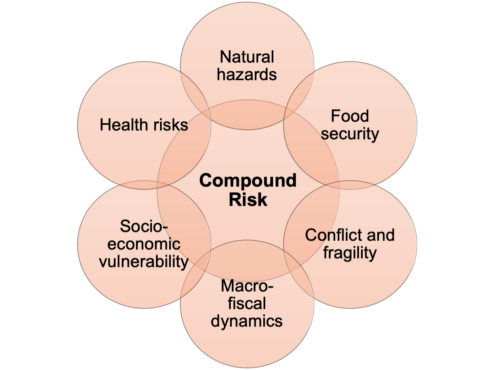
Note: The graphic above highlights the conceptual overlap between the six dimensions of compound risk selected and overall compound risk. In reality, there are more overlaps across individual dimensions.
Natural hazards: Natural hazards are perhaps the threat most typically associated with compound risk. They also feature prominently as core dimensions in a wide range of risk monitoring efforts, including INFORM, ND-GAIN and FAO/WFP’s Early Warning Analysis. There are many examples of back-to-back (or overlapping) hazards that have resulted in complex crisis. The short span between cyclones Kenneth and Idai in Mozambique (2019) and the more recent successive occurrence of hurricanes Eta and Iota in Nicaragua (2020) are good examples of the devastation that natural hazards can inflict on societies and economies. In the context of the CRM, we categorize natural hazards across climate-related events such as floods, droughts and cyclones; geophysical events such as earthquakes and tsunamis; as well as pest-related events such as the locust outbreak currently affecting the Horn of Africa.
Food security: As highlighted above, the CRM defines compound risk in relation to the interaction of both hazards and underlying vulnerabilities. In this sense, while food insecurity can often result as consequence of specific threats (such as natural hazards or conflict), high levels of food insecurity can significantly increase a community’s sensitivity and vulnerability to other compounding threats. Food insecurity within the CRM is defined as contexts where people do not have adequate physical, social or economic access to food. This holistic definition recognizes that there is no single metric of food insecurity, and rather demands multi-dimensional measures covering all aspects related to access to sufficient amounts of safe and nutritious food. Food security also features as a core dimension of both the ND-GAIN, FAO/WFP EWA.
Conflict and fragility: Fragile and conflict-affected states are among the contexts with the highest potential for compound risk. In particular, coping capacity is often limited, with weakened country systems unable to respond to shocks, exacerbating impacts on lives and livelihoods. The CRM considers both violent conflict – reflecting widespread and intense violence across many parts of the country, as well as institutional fragility – reflecting countries facing deep institutional crises, that have very poor transparency and government accountability, or that have weak institutional capacity. The CRM’s definition of conflict and fragility mirrors the World Bank’s classification of fragile and conflict-affected situations.6
Macro-fiscal: Economic shocks (and a country’s fiscal response) can have large impacts on a country’s capacity to deal with future risk as well as its development trajectory. In the context of the CRM, the macro-financial and fiscal risk dimension refers to the general status of a country’s economy and the sustainability of fiscal measures adopted. It focuses on aspects related to public sector, corporate, monetary, debt sustainability, banking and market-related risks.7 Given the lack of suitable preexisting metrics for tracking underlying vulnerability and emerging threats related to macro-fiscal risk, the CRM will opt for a phased approach. The macro-fiscal dynamics dimension will first be based on a modified version of the EIU Risk Briefing score (further details on the proposed steps are outlined in Figure 1). As a second step, the CRM team will seek to replace (or complement) inputs from the EIU with an in-house metric design in collaboration with a variety of Bank units (including CROCR, MTI, FCI and Prospects). See Annex X for further details on the proposed index.
Socio-economic vulnerability: The inclusion of socio-economic vulnerability in the CRM recognizes that compound risk arises from the interactions of hazards and underlying vulnerabilities. Indeed, a compound event can occur precisely because a community has experienced a rapid deterioration in livelihood outcomes and/or coping capacity – meaning that the ability to deal with emerging threats is severely compromised (even for threats that would otherwise not lead to crisis). To complement use of macro-level inputs, the CRM also monitors socio-economic vulnerability, leveraging the World Bank’s unique sources of real-time data on household-level dynamics – including poverty projections, inequality level estimates and remote phone-surveys.8
Health-systems, disease outbreaks and response (‘Health risk’ hereafter): The ongoing COVID pandemic is a prime example of the potentially devastating impacts of disease outbreaks on economies and societies. With this in mind, the CRM features a measure of: i) the effectiveness of a country’s healthcare system; ii) exposure to ongoing (or potential) health-related threats, namely epidemics and pandemics; and iii) the immediate implications of response options (or lack thereof) on a country’s ability to contain an ongoing threat.
The CRM is designed to allow some degree of flexibility and the remit of each dimension (and composition of indicators within each) may therefore change gradually over time as the nature of the global risk landscape continues to evolve. For example, the current emphasis on COVID-19 and its secondary impacts is likely to be reassesses over time as the pandemic evolves. To guide this process, the team plans to review the scope of each dimension (and indicators) quarterly, seeking inputs from relevant experts across the institution.
2.3 Risk outlooks within the CRM
Levels of compound risk can be looked at in many different ways depending on the interests and needs of intended users. For example, users may be primarily interested in knowing whether a given set of countries is predisposed to compound risks based on historical trends and underlying response capacities. Others may be more interested in understanding the extent to which a given country is experiencing changing risk conditions, based on recent or expected trends. Lastly, some users may wish to take both of these sources of information into account to understand how recent changes in risk conditions are likely to impact on a country’s overall levels of compound risk in the near future.
Recognizing the diversity of user needs, the CRM produces three distinct types of risk outlook: underlying vulnerability, emerging threats and overall compound risk.
Underlying vulnerability is a measure of a county’s predisposition to the occurrence and impacts of compound crises based on historical trends and underlying coping capacities. It can be thought of as a measure of systemic vulnerability, using static indicators to quantify levels of risk across all six dimensions used in the CRM. The majority of data sources come from multi-dimensional risk indices that combine elements of exposure, sensitivity and response capacity to given threats. Most inputs to the CRM are updated on an annual basis (e.g. the EU’s INFORM risk index, WFP’s Proteus index or the EIU’s Global Health Score index)9, and hence considered static given the low frequency of updates.
Use-case: Most relevant to decision makers seeking a holistic assessment of compound risk hotspots based on historical trends and underlying capacities.
Strengths: Comprised of comprehensive multi-dimensional indexes and well-established thresholds; an adequate gauge of systemic vulnerability to compound crises.
Limitations: Does not take into account latest trends and changes in underlying risk capacities (e.g. the status and nature of COVID impacts).
Emerging threats provides a near real-time assessment of recent or expected changes in a country’s risk profile. It uses dynamic indicators that reflect a country’s immediate status or provide an outlook on the near-to-medium term future (i.e. up to 12 months ahead). Data is similarly sourced from a range of internal and external risk monitoring initiatives that provide regular updates on changes in risk profiles (such as FEWSNET, ACLED and regional meteorological forecasts).10 Where possible, emerging threats indicators are chosen to align with those used in determining underlying vulnerability. It is worth noting that, ideally, emerging compound risk would be further disaggregated into immediate (up to 3 months), short-term (up to 12 months) and medium-to-long-term (up to 3–5 years) risk outlooks. However, data limitations mean that this first iteration of the CRM will group future risks together. Going forward, the team will work to further refine the forward-looking timescales of the CRM.
Use-case: Useful in gauging ongoing (or likely) changes in underlying risk reconditions. Can be seen as a measure of emerging threats anomalies – countries and regions that are or are likely to experience heightened / diminished risk in the coming months. The metric is better suited to comparing regional and country-level trends, and often best placed to identify emerging threats in countries that are not traditionally considered high-risk.
Strengths: Features real-time risk information, often updated on a weekly or monthly basis; Uses a hierarchy of data inputs to balance the need for use of robust data sources alongside geographic coverage.
Limitations: Limited availability of forward-looking risk information and differences in spatial coverage of data means that care must be taken in comparing emerging and underlying vulnerability metrics as well as carrying out cross-country comparisons.
Finally, underlying vulnerability and emerging threats scores are combined to produce a measure of Overall Compound Risk. This which can be seen as a gauge of vigilance needed in responding to risk conditions in the months ahead. It is meant as an approximate indication of how significant any emerging threats are relative to a country’s underlying level of vulnerability. As a result, countries that have seen a modest increase in emerging threats, but low levels of underlying vulnerability are weighted downwards, while those that have seen slight increases in emerging threats, but high overall levels of underlying vulnerability are weighted upwards. The combined score can be a useful tool for comparisons across countries and regions, but its accuracy is undermined by the fact that underlying vulnerability and emerging threats indicators are not always directly comparable.
Use-case: Most relevant for decision makers that want a high-level assessment of overall levels of alertness related to compound risk, allowing countries to be directly compared like-for-like.
Strengths: Provides a more accurate reflection of whether recent changes in risk conditions warrant further vigilance; Consistent, simple and transparent measure; Used by a wide variety of other risk monitoring efforts; More relevant in making comparisons across regions and countries. Overall alert flags are used as the CRM’s default in presenting country level risk profiles.
Limitations: Choice of aggregation procedure can produce different results; Care needed in interpreting values as emerging threats and underlying vulnerability indicators are not always directly comparable. Assignment of threshold values is more subjective as less easily interpreted (see Annex Supplementary Text 1).
2.4 Steps in designing the CRM
While the CRM provides separate country-level assessments for underlying vulnerability and emerging threats, the same simple multi-step process is used in calculating scores for both:11
To start with, each dimension of compound risk is broken down in a series of indicators sourced from a range of internal WB risk databases and, when not available, from external sources. Indicators are grouped separately according to whether they reflect Underlying Vulnerability or Emerging Threats.
Each indicator is assigned a threshold deemed to represent ‘high risk’. A numeric score is then generated using a bounded min/max normalization procedure, with bounds assigned to upper (and in some cases lower) risk thresholds.12 Thresholds are typically assigned via expert consensus and elicitation. In cases where widely agreed thresholds are not available percentiles are used.
Next, indicators within each dimension are grouped together and aggregated. In accordance with the CRM’s flagging system, aggregation is typically done by selecting the maximum value across the suite of grouped indicators.13 In cases where there are clear differences in indicator quality, or where data has limited geographic coverage, a hierarchy of inputs is assigned. The process results in a score ranging from 0 (no risk) to 10 (high risk) for each risk dimension. Separate scores are assigned for Underlying Vulnerability and Emerging Threats.
An approximate measure of Overall Compound Risk is also generated for each risk dimension by combining inputs from the Underlying Vulnerability and Emerging Threat scores. This combined measure can be calculated using two separate approaches – which choice left to the user depending on needs and preferences. One approach is to aggregate the two source inputs using a geometric mean (similarly resulting in a score ranging from 0–10). Alert Levels are grouped into three categories with scores ranging from 7–10 deemed high alert, scores between 5–7 deemed medium alert status and scores between 0–5 considered low alert status. A second approach is to apply a filtering system across the two source inputs. This avoids the need to create a country-level score. Instead, alert levels are simply assigned when both inputs have reached a minimum level. For example, high overall compound risk for a given risk dimension is assigned when emerging threat and underlying vulnerability are similarly rated as high risk.
Country-level profiles are provided by summing the number of dimensions deemed as high (or medium) risk. Three separate measures for Underlying Vulnerability, Emerging Threats and Overall Compound Risk are provided, recognizing the diversity of user interests. Country-level scores can either be generated as the sum of risk dimensions deemed high risk or a combination of high and medium risks.14 The latter is chosen as the default for the remainder of this note.
Finally, expert elicitation is used to validate and complement the CRM outputs with qualitative analysis. The expertise and judgement of WB sectoral experts is an essential element of the overall CRM methodology, guiding indicator selection and aggregation as well as the identification of appropriate thresholds. To help manage the complexity of the analysis, we strive for methodological simplicity, but this inevitably leads to a loss of accuracy, with the risk of not capturing all areas of interest. Expert elicitation methods can help to circumvent these limitations.
Step 1: Indicator selection
To begin with, suitable indicators are selected to populate all six risk dimensions included in the CRM (with indicators grouped separately for Underlying Vulnerability and Emerging Threats). The CRM team worked with experts across key GPs to identify suitable indicators, alongside an extensive review of literature and relevant multi-dimensional risk indexes. The selection was guided by a number of factors, including: (i) whether commonly-used risk metrics already exist; ii) whether relevant indicators are already in use by WB teams; (iii) levels of geographic coverage and data quality; and (iv) frequency of updates. Whenever possible, the team sought to use existing multi-dimensional risk metrics, such as the INFORM Risk Index (see Box 3 for details). In cases where a robust multi-dimensional index is unavailable, the team identified a basket of relevant source indicators. In many cases, proxy indicators are used (particularly for emerging threats).
Box 3: Scope and overlap with the INFORM Risk index
INFORM Risk Index: The INFORM is a multi-dimensional index aimed at supporting the humanitarian sector. It is a collaboration of the Inter-Agency Standing Committee (IASC) Reference Group on Risk, Early Warning and Preparedness and the European Commission. Results are released on a bi-annual basis.
INFORM’s Risk index is split into six ‘categories’, consisting of: natural, human, socio-economic, vulnerable groups, institutional, and infrastructure. Indicators are selected to populate each of the six categories and aggregated together to form on overall composite index.
In addition to the Risk Index, INFORM has a number of satellite products that are of relevance to the CRM. In particular, the INFORM Severity index tracks the status of ongoing crises using a combination of quantitative and qualitative insights. More recently, the INFORM COVID-19 index tracks a range of real-time metrics gauging exposure and impact of the pandemic.
The CRM draws on a select range of indicators from across the Risk, Severity and COVID indexes used to populate a number of existing vulnerability dimensions – including natural hazards and socio-economic vulnerability.
For further details on INFORM’s methodology and scope see: https://drmkc.jrc.ec.europa.eu/inform-index/INFORM-Covid-19
Below we provide a brief summary of considerations in selecting key indicators used to populate the six dimensions of compound risk in the CRM (further highlighted in Table 1 below). For more details on aggregation procedures and thresholds used in each dimension of compound risk, as well as notes on suitability and alternatives see Annex Tables 1–6.
Table 1: Overview of indicators used in the CRM (see Annex Table 1–2 for details on thresholds and aggregation)
| Compound Risk Dimension | Underlying Vulnerabilities | Emerging Threats |
|---|---|---|
| Natural Hazards |
Indicator(s) used in CRM: Data hierarchy: Level 1: All source indicators are assigned Level 1 Rationale: A range of natural hazard indexes exist, providing a number of options for use in the CRM. Given the CRMs close alignment with the INFORM Risk Index – particularly for measures of underlying vulnerability – use of INFORM’s Natural Multi-Hazard Index was considered most appropriate. The index compiles exposure and vulnerability metrics on a range of hazards including earthquakes, tsunami, drought, flood and heatwaves. In addition, the CRM makes use of extensive information on exposure from the WB’s ThinkHazard! Database. Thresholds are assigned by the GCRP team in consultation with GFDRR. Alternatives considered: There are a wide range of natural hazard indexes. Prominent metrics include ND-GAIN, Global Risk Data Platform (UNEP), and the World Risk Report. However, none are considered as comprehensive as the INFORM risk, which is widely used by other risk monitoring initiatives. |
Indicator(s) used in CRM:
Data hierarchy: Level 1: All source indicators are assigned Level 1 Rationale: While there are many real-time and forecast-based tracking tools for natural hazards, few compile multi-hazard information to provide a snap-shot of emerging threats. Those that do are often focused on specific regions (e.g., Europe and North America). Under the current iteration of the CRM, information from three mains sources is used. This includes country-level seasonal risk profiles using forecasts derived from Columbia University’s International Research Institute for Climate and Society (IRI). The forecast operates on 2-3 month time horizons, with the CRM’s index primarily focus on above or below average precipitation. Forecasts also provide estimates of expected impacts from ENSO events. In addition to the seasonal forecast, the CRM makes use of a number of other real-time hazard trackers. This includes inputs from the EU’s Global Disaster Alert and Coordination System (GDACS), INFORM’s Natural Hazards Crisis tracker, ACAPS Risk List and FAO’s Desert Locust Monitor—all of which monitor the severity and impact of ongoing hazard events. Alternatives considered: In addition to the three live hazard tracking tools, a number of other options exist including feeds from the USGS, Pacific Disaster Centre, and NOAA. Most have similar coverage and breadth of monitoring systems. To monitor seasonal risks, the CRM currently makes use of a prototype index tracking the proportion of land covered by above or below average expected rainfall. The index has been developed together with Columbia University. Going forward the CRM will make use of a more advanced module that will combine information from the seasonal forecast with forecasts for hurricane basin activity and flood incidence (similarly developed in conjunction with Columbia University). |
| Food Security |
Indicator(s) used in CRM:
Data hierarchy: N/A Rationale: Food insecurity, as with most dimensions of compound risk, is inherently multi-dimensional. While a wide range of indicators are suitable, use of a composite index aggregating information across core dimensions of food insecurity was deemed more appropriate for the CRM. Amongst potential metrics, the World Food Programme (WFP)’s Proteus index was chosen for use in the CRM as a holistic measure of predisposed food insecurity and country-level response capacity. The variable is a multi-dimensional composite that groups indicators according to four dimensions: food availability, access, utilization and stability (see Caccavale and Giuffrida 2020). While the index is comprehensive, it was last updated in 2018 – with little indication as to whether the database will be maintained going forward. Consideration will be given to updating use of the Proteus Index going forward (or selecting suitable alternatives) together with the Agriculture and Food GP. Alternatives considered: A number of alternative metrics were considered, including the Ending Rural Hunger Index, Hidden Hunger Index, Global Food Security Index and WFP Hunger Maps. Another option would be to use current FEWS NET IPC ratings or an average of classifications over a set period (such a one year). In consultation with the Agriculture and Food GP, few were deemed to have the coverage or depth required compared with the Proteus Index. |
Indicator(s) used in the CRM:
Rationale: By far the best-known measure of emerging food insecurity comes from the FEWS NET early warning system. FEWS NET provides periodic and comprehensive multi-agency overviews of current and future food insecurity conditions across 30 monitored countries. In order to ensure alignment with internal WB systems, the choice of indicator threshold is linked to the WB’s Crisis Response Window (CRW) Early Response Financing (ERF) trigger. The Monitor also makes use of data from FAO / WFP’s acute food insecurity early warning initiative (with similar coverage to FEWS NET). In addition to these measurements of the number of people living in food insecurity, the Monitor also measures food price inflation, using WB microdata on monthly food prices. Alternatives considered: Alternative food price volatility metrics were considered in the form of FAO’s GIEWS and FPMA metrics. However, the WB’s internal metrics were deemed to be better aligned with thresholds used by Ag GP. Similarly, use of WFP’s mVAM data may add value going forward. |
| Conflict and Fragility |
Indicator(s) used in CRM:
Rationale: There are a large number of conflict and fragility indexes provided by academia, civil society, and multi-lateral agencies. Given the need for analytical rigour and to ensure internal consistency within the World Bank, the CRM makes use of the Fragile and Conflict-affected Situations’ list as a primary source of data. The metric reflects two main factors: (i) countries affected by violent conflict and (ii) countries with high levels of institutional and social fragility. The choice of indicator and threshold was completed in close consultation with FCV. The Monitor also uses the Fragile States Index, a composite measure widely used by international organisations. Alternatives considered: A number of alternatives were considered, with the four main sources being (i) the Global Peace Index, (ii) INFORM’s Conflict Risk Index, and (iii) the World Bank’s Conflict structural model. Given the need to ensure accuracy of assessment and alignment with official World Bank classifications, none were considered as comprehensive or as widely-used as the FCS list. Going forward, the Monitor will seek to align its metrics with FCV’s Global and Regional Conflict Risk Monitor. |
Indicator(s) used in CRM:
Data hierarchy: Level 1: All source indicators are assigned Level 1 Rationale: Monitoring or predicting of conflict and fragility-related conditions remains a considerable challenge. Given the uncertainties with many forecasting tools, the CRM currently focuses on observed data. First, the Monitor relies on two indicators from the Armed Conflict Location & Event Data Project database (ACLED). ACLED is a widely used and respected resource, monitoring fatalities on a daily basis. The Monitor uses both the number of ‘fatalities related to political disorder and events’, and the number of protests, demonstrations and violent events. For both, the Monitor measures how recent months compare to a country’s historical baseline. The monitor also tracks ‘political disturbance’, measured via the Rulers, Elections, and Irregular Governance dataset (REIGN). (Note that REIGN’s maintenance is currently paused, and the CRM is temporarily reconstructing it with the IFES election calendar and the Global Instances of Coups dataset. These are updated when new elections are declared and coups occur.) In particular, REIGN captures countries where an irregular election or coup has recently taken place. The CRM makes use of the dataset to flag imminent occurrence of elections in fragile or conflict-affected countries. The monitor also makes use of the ACAPS Risk List and the Economist Intelligence Unit’s Security Risk dimension. Use of these indicators to reflect emerging conflict and fragility risk has a number of limitations. In particular, institutional fragility is challenging to reflect accurately. Additional metrics will be considered over time in consultation with FCV. Alternatives considered: The GCRP team considered a number of alternatives. In particular, UCDP’s Battle-Related Deaths database serves as a useful complement to ACLED. However, the database only includes global coverage commencing October 2020, making it difficult to compare against historical baselines. Going forward, a combination of ACLED and UCDP data sources may be adopted. Related to institutional fragility, the main alternative is INFORM’s Severity Index. This metric tracks the severity and status of existing crisis events (with the ability to isolate political and fragility-related events). INFORM is well respected and used by a range of development organizations. Its inclusion within future iterations of the CRM will be actively considered together with the FCV team. In addition, ACAPS and the IRC’s Watchlist provide similar forward-looking fragility outlooks, though neither was deemed to be well matched to the CRM’s current setup. Over time, choice of the CRM’s metrics will align with FCV’s Global and Regional Conflict Risk Monitor (currently under development). |
| Macro-Fiscal Dynamics |
Indicator(s) used in CRM:
Data hierarchy: N/A Rationale: Few holistic measures of exposure and sensitivity to macro-fiscal shocks exist – especially considering the CRM’s need for global coverage. With that in mind, the CRM makes use of the EIU’s Operational Risk Score as an interim measure (to be supplanted by an in-house index currently under development with support from various units across the Bank). As a widely used multi-dimensional index the EIU’s Operational Risk Score (ORS) provides a regularly updated measure of macro-fiscal conditions across a range of different components. It is comprised of 70 grouped indicators across a variety of categories, including: financial risk, foreign trade & payments risk, infrastructure risk, labor market risk, legal & regulatory risk, macroeconomic risk, and tax policy risk. For the purposes of the CRM, ORS categories relating to security, political stability and government effectiveness are removed from the raw measure owing to duplication with other risk dimensions within the CRM. Unlike many alternative risk metrics (such as the WB’s Macro-Financial Review index), the ORS is global in nature, profiling risk scores across 180 countries. In order to reflect levels of underlying vulnerability, the CRM makes use a 12-month ORS average. Use of an average of prior scores provides a (relatively) static assessment of the overall status of macro-fiscal conditions. Inclusion of past values may also help smooth out some of the forward-looking elements of the EIU. This is also consistent with source indicators for underlying vulnerability across other risk dimensions in the CRM – most of which update on an annual basis. Alternatives considered: A number of alternatives for macro-economic vulnerability were considered, including use of a wide range of indicators provided under the World Bank’s Global Economic Prospects (GEP) and IMF’s World Economic Outlook (WEO). In particular, the WB’s Macro-Financial Risk Index (MFRI) has close overlaps with the CRM’s architecture (both on vulnerability and emerging threat elements of risk). Unfortunately, data from the MFRI is only available in 44 countries, meaning that a hierarchy of different indicators would be needed in regions with large data gaps. Alternatives such as the World Bank’s Corporate Vulnerability Index (CVI) and Debt Sustainability Analysis (DSA) are similarly limited – either by concerns over geographic coverage or lack of holistic assessment of macro-fiscal risk conditions. As mentioned in Section 2.2 the CRM is currently trialing an in-house to reflect macro-fiscal elements tailored specifically to the CRM’s overall framework together with inputs from MTI, FCI, CROCR and the Prospects Group (see Annex X). If shown to be robust, the CRM will transition to the in-house metric (either by replacing or complementing the EIU risk score) by mid-2021, once the new metric has been trialed and validated. |
Indicator(s) used in CRM:
Rationale: To gauge whether macro-fiscal risk conditions within a given country are worsening (or likely to worsen in the coming months) the CRM uses a point difference between the latest monthly EIU score and average scores for the previous year (excluding the current period). This provides an overview of countries where the macro-fiscal environment has recently deteriorated relative to expected conditions over the previous year. A similar measure is used by the EIU in referring to upgrades/downgrades in macro-fiscal conditions. Given the ORS updates on a monthly basis, the metric provides a regular update on the status of emerging threats. With global coverage across a range of macro-fiscal elements, use of the ORS does not require use of a hierarchy of data inputs to fill coverage gaps (as with other multi-dimensional macro-fiscal outlooks). As mentioned previously, the Alternatives considered: A number of variants are possible using a similar EIU setup. For example, rather than using a simple point difference, deviations could instead be calculated using a Z-score. However, given that EIU scores are currently only available for the prior 12 months (with many countries exhibiting little variation during this time period), use of a difference in values is currently preferred. Efforts are currently underway to secure access a longer timeseries of OSR data which may facilitate an update of methods. In addition, the current approach compares values for the current month relate to the 12-month mean. While this provides a decent gauge of recent upgrading/downgrading of macro-fiscal conditions, it may be of use to extent the observational period to 3 (or even 6) months. This would allow for broader terms to emerge (especially for risk conditions that materialize slowly over time or have lagged effects). However, this extended approach would only be suitable with access to longer-term OSR timeseries data (past 12 months) – something the CRM team are actively pursuing. In addition, and as mentioned previously, the CRM team will continue to trial an in-house measure for tracking emerging macro-fiscal threats. The measure will seek to extent existing WB metrics (such as the MFRI, CVI, DSA, etc.) to allow for greater geographic coverage and better fit within the scope of the CRM’s analytical framework. |
| Socioeconomic Vulnerability |
Indicator(s) used in CRM: Data hierarchy: N/A Rationale: As with many of the compound risk dimensions, socio-economic vulnerability is a multi-dimensional concept. It’s inclusion in the CRM recognises that compounding events are a product not only of exposure to consecutive (or overlapping) hazards, but the ability of people and communities to cope with and respond to emerging threats. Severe heightening of socio-economic vulnerabilities can often lead to compounding events, even in cases where exposure to mild overlapping threats would otherwise not lead to a disaster. With that in mind, the CRM currently makes use of the INFORM’s Socio-Economic Vulnerability Index as a composite measure comprised of traits related to deprivation, inequality, dependency, uprootedness and composition of vulnerable groups. Alternatives considered: There are a large number of socio-economic vulnerability indexes. This includes OPHI’s Multi-dimensional Poverty Index (Oxford), UN Human Development Index, the ND-GAIN Vulnerability Index (Notre Dame) alongside others. Many country-level outcomes across these indexes are correlated and use of INFORM is consistent with its inclusion in a number of other dimensions. |
Indicator(s) used in CRM:
Data hierarchy: Level 1: All source indicators are assigned Level 1 Rationale: Finding real-time global measures of socio-economic vulnerability is a considerable challenge, particularly regarding those that reflect household-level conditions and coping capacities. Having consulted widely with the WB’s Prospects team, Poverty and Equity GP, and Development Data Group, the CRM team assembled a basket of indicators. The first metric concerns country-level poverty projections. Figures are taken from the World Bank’s Macro Poverty Outlook (MPO), with forecasted percentage point differences in the proportion of people living below $1.90 chosen as a proxy for deteriorating household-level coping capacities. Percentage point differences for both 2021-2020 and 2020-2019 are used in the current iteration, recognising that the knock-on implications of increased poverty on household-level vulnerability can persist for long periods of time. In addition to poverty, inclusion of unemployment forecasts is included to factor future changes in labour conditions and livelihood opportunities using the IMF’s World Economic Outlook. As with GDP inputs, percentage point differences for both 2021-2020 and 2020-2019 are used (for the same reasons). Alongside this, the CRM uses MFRI’s composite measure of household-level risk (made up of changes to household debt-to-GDP ratios and unemployment rates during the previous quarter). Alternatives considered: Suitable alternatives for social-economic vulnerability are actively being considered together with DEC and Poverty and Equity GP. One option may be the inclusion of estimates of inequality as a proxy for increased vulnerability in lower income quantiles. However, forward looking estimates for inequality are not currently available. Instead, estimates of forecasted unemployment are included as an indicator with close overlaps and characteristics of being a driver of inequality. |
| Health Security and Pandemic Response |
Indicator(s) used in CRM:
Data hierarchy: Level 1: All source indicators are assigned Level 1 Rationale: Choice of indicators for measuring pre-existing health security capacity remains contentious. Prior to the COVID-19 pandemic, the most comprehensive and commonly referred to metric for pandemic preparedness was the Global Health Security Index (GHS). The measure is a composite index combining 85 sub-indicators (across 6 health categories) with solicitation of a panel of 21 leading health experts. While the measure is undoubtedly comprehensive, it has proven a relatively poor correlate of present day COVID-19 exposure and response, especially considering high rates of incidence and impact in Europe and North America, coupled with lower-than-expected impacts in parts of Africa and Southeast Asia. With that in mind, and in consultation with the Health GP, the CRM includes the GHS Index alongside a COVID-specific metric developed by the European Union’s Joint Research Centre INFORM initiative. The INFORM COVID Risk Index is an adaptation of the INFORM initiative’s Epidemic Risk Index, used to support prioritization of preparedness and early response actions for the primary impacts of the pandemic. The two inputs are aggregated, with high-risk thresholds assigned by the GCRP team in consultation with Health GP. Alternatives considered: Alternatives were considered in the form of the Epidemic Preparedness Index (Oppenheim et al. 2018). However, many similar indexes are less comprehensive than the GHS and suffer from the same lack of correlation in predicting the country-level impacts of COVID-19. |
Indicator(s) used in CRM:
Data hierarchy: Level 1: All source indicators are assigned Level 1 Rationale: The two measures of emerging risk are provided by the WHO’s Disease Outbreak News (DONs) alerts, a real-time system providing information on all disease outbreaks notified to the WHO, and the IFRC’s list of on-going epidemics. Alternatives considered: A large number of metrics exist in tracking the impacts of COVID-19. Alternatives that may add value to future iterations of the CRM include excess mortality and test positivity rates. However, gaps in data coverage and quality limit their inclusion at the present. Given the changing nature of COVID’s impacts on Global health systems, the CRM will periodically review choice and prominence of COVID-19 metrics in consultation with the WB’s Health GP. Inclusion of other suitable metrics such as vaccination coverage are currently being explored. Data hierarchy: Level 1: All source indicators are assigned Level 1 Rationale: The primary measure of emerging health risk is provided by the WHO’s Disease Outbreak News (DONs) alerts – a real-time system providing information on all disease outbreaks notified to the WHO. Given the prominence of COVID in affecting global health system, the CRM makes use of several COVID-monitoring tools. To begin with, indicators of COVID incidence are chosen in the form of bi-weekly changes in both case counts and deaths (including numbers per 1M and growth rates). In addition to exposure, response capacities are factored in through three policy trackers provided by Oxford University’s Blavatnik School of Governance: the Government Response Index and Lockdown Rollback Index. Alternatives considered: A large number of metrics exist in tracking the impacts of COVID. Alternatives that may add value to future iterations of the CRM include: excess mortality and test positivity rates. Gaps in data coverage and quality limit their inclusion at the present. Given the changing nature of COVID’s impacts on Global health systems, the CRM will periodically review choice and prominence of COVID metrics in consultation with the WB’s Health GP. Inclusion of other suitable metrics such as vaccination coverage are currently being explored. Additionally, this risk dimension will continue to be explored, especially as the impacts of COVID are expected to diminish over time – through 2021 and beyond. |
Step 2: Bounded normalization
The next step in the process is normalizing each indicator on a scale from 0–10. In doing so, the CRM assigns each indicator an upper and lower bound based on high and low risk thresholds. In most cases, expert elicitation is used to define bounds for the min-max normalization process. All indicator values above the upper threshold are then assigned a value of 10 (and considered high risk); values below the lower threshold are assigned 0 (considered little-to-no risk); and all other values receive a normalized score that falls somewhere in-between (using the formula below). The normalized procedure is described below, where \(IndicatorRaw_i\) represents a country’s score for a given indicator i (for all values in-between the threshold bounds). \(ThresholdLower_i\) and \(ThresholdUpper_i\) are the designated lower and upper thresholds for respective indicators and \(IndicatorNorm_i\) is the normalized indicator score ranging from 0–10.
\[IndicatorNorm_i = \frac{IndicatorRaw_i - ThresholdLower_i}{ThresholdUpper_i - ThresholdLower_i}\cdot 10\]
Where possible, the CRM seeks to align upper and lower bounds with risk thresholds used by other WB teams or based on widespread expert consensus. There are three exceptions to this procedure, requiring some degree of subjective interpretation. Firstly, where no expert consensus on risk thresholds exist, normalized bounds are assigned via percentiles (typically 95th/5th). Secondly, in cases where pre-existing vulnerability categories are specified, or where differences between risk categories are non-linear, the CRM defaults to using expert-defined categories as the basis of indicator scores. For example, the World Bank’s Debt Sustainability Analysis (DSA) rates countries’ likelihood of external debt distress in three categories: Low; Moderate; and High. In this case, the CRM manually aligns scores with the DSA categories (using values of 3, 7 and 10 respectively). Lastly, in instances where binary indicator outcomes exist – e.g. whether a drought is ongoing or not – the CRM simply assigns a 10 or 0, with no normalized values in-between.
There are three reasons for transforming raw indicator scores using bounded normalization:
It allows for ease of comparability across indicators – with all scores falling between 0–10;
It reduces the influence of outliers. Many sources of risk information are heavily skewed, and provision of upper and lower bounds helps to diminish their influence on all intermediary scores (note that that this can also be addressed using Z-scores); and
It allows for simple and transparent identification of high/low risk countries. A score of 10 means that a country has exceeded the designated threshold for the respective indicator, a 0 reflects a country that is considered very low risk. This simplicity of interpretation is of particular use when it comes to aggregating indicators together to form a single score for each dimension of compound risk.
Step 3: Indicator aggregation
After the normalization procedure, indicators are grouped and aggregated by risk dimension to generate an individual risk score for all six dimensions of compound risk. Separate scores are assigned for Underlying Vulnerability and Emerging Risk. The simplest and most transparent way of aggregating scores is to take the maximum value across grouped risk indicators for each given dimension.
\[RiskDimension = \ \max_{i = 1\ldots n}\left\{ IndicatorNorm_i \right\}\]
Here \(RiskDimension\) is the score for a given dimension of compound risk r, with the maximum score for all normalized indicators (\(IndicatorNorm_i\)) selected across the suite (\(i= 1\ldots n\)). For example, if a given country’s food security is made up of three source indicators (with scores of 5, 7, and 8 respectively), then food security risk will simply be listed as the highest value in the suite (8 in this case). In each of these cases, normalized values are aligned with the upper (and lower) bounds defined by expert elicitation and represent high (and low) risk. The process mimics the methodology of a number of similar risk monitoring systems, including the WB’s Macro-Financial Risk Index. This step results in a score for each dimension of compound risk ranging from 0–10. A risk dimension with a score of 10 implies that at least one of the grouped indicators in the dimension is above the risk threshold.
In some instances, dimensions consist of indicators with variable quality. For example, a selection of inputs may be high-quality with limited geographic coverage. Others may reflect weaker proxies but provide data for all countries. In such instances, a hierarchy of data inputs is specified (see Tables 1 and Annex Tables 1–2). Firstly, the nature of the data hierarchy is established, typically by grouping indicators into two levels: Level 1 (consisting of high-quality low coverage indicators) and Level 2 (lower quality higher coverage). For dimensions that use a data hierarchy, scores are assigned solely on the basis of Level 1 indicators wherever country data exists (i.e. the maximum value of all Level 1 indicators). In countries where no Level 1 data is available, the CRM reverts to aggregating Level 2 data instead. For example, in the case of the Food Security component, FEWS NET is used as a Level 1 data source meaning that in countries where available information exists FEWS NET ratings take precedence. In cases where data is unavailable, the CRM falls back on food price volatility data (gathered by the WB’s Food Price Monitor) as a proxy for food insecurity.
While this aggregation method is very easy to implement and interpret, methodological simplicity inherently comes with tradeoffs (for alternative methods considered see Supplementary Material Text 1 in the Annex). In this case, sole use of max values means that false positives are more likely than with other methods. For example, if a chosen country’s three food security indicators are observed as 10, 2 and 3 respectively, then the max score of 10 would fail to represent this diversity. This is especially problematic in examples where there may be a large number of source indicators in a given dimension of compound risk (and therefore higher likelihood that at least one score is a 10), or where poor proxies are used (that may not be in line with the suite of other indicators). Similarly, a max system does little to differentiate between the severity of high-risk countries. Returning to the same food security example, a country with scores of 10, 10 and 10 would be rated the same as the previous example of 10, 2 and 3. Finally, use of a data hierarchy means that cross-country comparisons can be problematic as different countries may use different data inputs. Given the alternative of limiting information to only countries with the highest-quality data, and perhaps misrepresenting the geographic spread of risk further, the CRM adopts the hierarchy approach while seeking to clearly communicate all sources of inputs.
Step 4: Approximating Overall Compound Risk
While information from Underlying Vulnerability and Emerging Threat scores are useful in and of themselves, many users of the CRM will want to weigh recent or upcoming threats against a country’s underlying levels of vulnerability. As such, the CRM produces a third score (termed “Overall Alert Flags”) for each risk dimension by combining Underlying Vulnerability and Emerging Threats scores. The default approach to aggregate the two scores using a geometric mean (see Annex X for alternatives that use a filtering approach). The approach provides a broad overview of the level of alertness needed in weighing the importance of changing risk conditions relative to a country’s coping capacity: i.e. a gauge of vigilance required in monitoring ongoing (or upcoming) in the months ahead relative to normal conditions. With that in mind, combining vulnerability and emerging threat elements ensures that countries that have seen a modest increase in emerging threats, but low levels of underlying vulnerability are weighted downwards, while those that have seen slight increases in emerging threats, but high overall levels of underlying vulnerability are weighted upwards.
The CRM’s proposed method is very similar to approaches taken by INFORM and other multi-dimensional risk indexes. Here \(RiskDriverMax_r\) is the emerging threats score for dimension \(r\), and underlying vulnerability is represented by \(ExistingRisk_r\).
\[AlertLevel_r = \sqrt[2]{RiskDimensionMax_r \cdot ExistingRisk_r}\]
This results in a score ranging from 0–10, which can similarly be further grouped into three broad categories. Scores ranging from 7–10 are deemed to represent a high-alert status, scores between 5–7 are seen as medium alert status and scores between 0–5 considered low-alert status.
The combined score should be considered a more accurate reflection of the level of alertness needed in monitoring and responding to given risks – one that permits comparisons across countries in a more direct manner than for simple use of the Emerging Threats score (which charts changing risk conditions relative to the norm). The benefits of combining scores from Underlying Vulnerability and Emerging Threats into a single high-level measure can be seen in how the approach weighs the two scores together. Despite the need for vigilance in any context facing intensification of emerging threats, alert levels are likely to be far reduced in countries with low levels of vulnerability (owing to the fact that severe crises are less likely). Similarly, concern should be far higher whenever a vulnerable country experiences a worsening of risk conditions (even if a slight or moderate). Indeed, in the context of a supporting early action for crisis risk prevention these are typically the countries and contexts of primary interest. It is, however, worth remembering that the CRM is designed as a flagging system, not a predictive tool. A high Overall Alert Flag score does not mean that a compound crisis is expected to materialize. Instead, it signals the preconditions and catalytic environment for one.
Use of a geometric average seeks to better account for the close relationship between underlying vulnerability and emerging threats, as well as the fact that outcomes and likely to be multiplicative. The same approach is used in a number of other risk metrics (including INFORM), and well supported in the wider risk literature – see Guillaumont (2009). However, it is important to note that Overall Alert Flags can similarly be calculated using a number of the alternative methods – such as an arithmetic mean or max value). Each has their own strengths and weaknesses (a detailed discussion and comparison of different options is presented in Section 3.2).
Step 5: Determining country alert levels for underlying vulnerability, emerging threats and overall compound risk
Alongside separate scores for all six risk dimensions, the CRM also assigns country-level scores summarizing risk profiles for Underlying vulnerability, Emerging Threats and Overall Alert Flags. These are done by summing (or “flagging”) the total number of risk dimensions classified as high (or high + medium) within a given country. While use of a combined metric helps to put a country’s current (and future) risk conditions into perspective, care should be taken in interpreting Overall Alert Flags given the fact that indicators (and thresholds) Underlying vulnerability and Emerging Threats are not wholly compatible across all risk dimensions. For this reason, the CRM present all three country-level scores separately, allowing the user to determine which measure is of most relevance given the intended use.
The most straightforward method is to assign a “1” for each risk dimension classified as high risk. For example, if a country has Emerging Threat flags for food security and socio-economic vulnerability (i.e. scores of 10 across both risk dimensions), then the country’s Emerging Threat score will be 2.
\[RiskDimensionHigh_r = \ \left\{ \begin{matrix} 1\ \ \ \ \ \ \ RiskDimensionCategory_r = HighRisk \\ 0\ \ \ \ \ \ \ RiskDimensionCategory_{r} \neq HighRisk \\ \end{matrix} \right.\ \]
\[TotalCompoundRisk_{c} = \sum_{r = 1}^{6}{RiskDimensionHigh_{r}}\]
This results in a single country-level score ranging from 0–6. A score of 6 (or 6 risk flags as referred to in the CRM) simply implies that all six dimensions are considered high risk. The method tells us how many dimensions are considered high-risk and can be used to gauge whether multiple preconditions exist for emerging compound crises. It is easy to compute, and above all, simple to interpret: a country’s score (whether for Underlying vulnerability, Emerging Threats or Overall Alert Flags) is equivalent to the number of high-risk dimensions for a given country. It also allows for the status of emerging compound risk to be readily compared, both within and across countries – noting the various methodological caveats outlined above.
Classification of risk dimensions into categories differ slightly between Underlying vulnerability, Emerging Threats and Overall Alert Flags owing to the different aggregation methods used. Risk dimension scores of 10 are classified as high risk For Underlying vulnerability and Emerging Threats, implying that at least one of the grouped indicators is about the high-risk threshold (based on the Max Value approach). Dimensions scores ranging from 7–10 are deemed medium risk. For Overall Alert Flags, risk dimensions with scores ranging between 7–10 are labelled high risk owing to the fact that scores are derived from a combination of Vulnerability and Emerging Threat elements. Dimensions with scores from 5–7 are therefore classified as medium risk.
Given that risk is seldom (if ever) binary, a second approach is to assign an intermediary score for all medium-risk countries. This recognizes the limitations of assigning a 0 to all dimensions below the high-risk threshold. Indeed, countries with dimension scores just under the high-risk threshold are likely to be of much higher risk than those far below the lower threshold. Accordingly, the CRM calculates an alternative measure of overall underlying vulnerability and emerging threats by assigning a half-value to medium-level risks.
\[RiskDimensionHighMed_{r} = \ \left\{ \begin{matrix} 1\ \ \ \ \ \ \ \ \ \ \ \ \ RiskDimensionCategory_{r} = HighRisk \\ 0.5\ \ \ \ \ \ \ \ \ \ RiskDimensionCategory_{r} = MedRisk \\ 0\ \ \ \ \ \ \ \ \ \ \ \ \ \ RiskDimensionCategory_{r} = LowRisk \\ \end{matrix} \right.\ \ \]
\[TotalCompoundRisk_{c} = \sum_{r = 1}^{6}{\RiskDimensionsHighMed_{r}}\]
In this instance, compound risk\(\ (TotalCompoundRisk\)) in country c, is calculated as the sum of all medium-risk dimensions (assigned a 0.5) and high-risk dimensions (assigned a 1). For example, a country with a high-risk flag for Health and a medium-risk flag for Food security would be listed as having a total of 1.5 compound risk flags. This isn’t as intuitive as the previous setup. However, it is still relatively easy to interpret and communicate. More importantly, a combination of high and medium risk flags provides a more holistic representation of underling risk conditions. Users will able to differentiate between the two methods (i.e. high-risk only and medium + high-risk) using the CRM database and interactive Dashboard. For this reason, the combined medium and high-risk flagging system is used as the default for the remainder of this Note15.
While the CRM is based on a simple sum of risk flags as a means of promoting ease of interpretability and transparency, a number of aggregation options exist. For example, the CRM team also considered use of an averaging method. Country-level score could be calculated as the average of the six dimension-level scores. However, this approach suffers from many of the same weaknesses as use of averaging methods in deciding individual dimension-level scores. In particular, compound crises tend to occur when underlying dimensions of risk are above a country’s coping capacity (i.e. above high-risk thresholds). They can also occur when just two or three dimensions of compound risk interact – even if conditions in other dimensions are relatively stable. For example, a country with three emerging dimensions above the high-risk threshold (i.e. scores of 10) and three dimensions below the high-risk threshold (i.e. scores of 0) would only have an average overall emerging threats score of 5 despite displaying heightened preconditions for compound risk (recognizing that average emerging threats scores would range from 0–10 rather than 0–6). Instead, use of the flagging system clearly highlights instances where coping capacities are likely to be exceeded across any of the six dimensions and does not dilute overall results when other dimensions might be experiencing normal (or below-normal) risk conditions. For this reason, the CRM is built around a max-value flagging system. However, users are free to download the data manually and adjust the methodology accordingly.
Step 6: Cross-validation, expert elicitation and continual updating
Finally, expert elicitation is used to complement the CRM’s outputs before they are shared with end users in the Bank. The expertise and judgement of WB sectoral experts is an essential element of the overall CRM methodology, guiding indicator selection, aggregation as well as identification of appropriate thresholds. Furthermore, before they are shared with end users, quantitative results from the CRM will be cross-checked by WB sector and regional experts to detect anomalies in the flag-based system, as well as to complement the CRM’s findings with rich qualitative insights from a range of WB experts.
To support this expert elicitation process, a Technical Steering Group will be set up building on the informal working level consultations conducted during the methodological design phase. The Steering Group will allow for continuous expert inputs into the CRM methodology as well as review of CRM outputs. The Steering Group will include at least one focal point for each of the six dimensions of compound risk and it is expected that it will be convened quarterly as part of the GCRP’s horizon scanning exercises. The quarterly horizon scan will include the output of the CRM , as well as additional interpretation provided by the Technical Steering Group that would modulate the understanding of the quantitative CRM outputs.
3 Results
3.1 Overview of underlying vulnerability, emerging threats and overall alert flags
Below we present a snapshot of results from the CRM showcasing the types of outputs that can be made available to decision-makers through the CRM. Further breakdown of summary plots and results can be seen in Annex Tables 4–6 and Annex Figures 6–9.
3.1.1 Global overview
Figure 3: Profile of UNDERLYING VULNERABILITY (i.e. static snapshot of historic predisposition to risk)
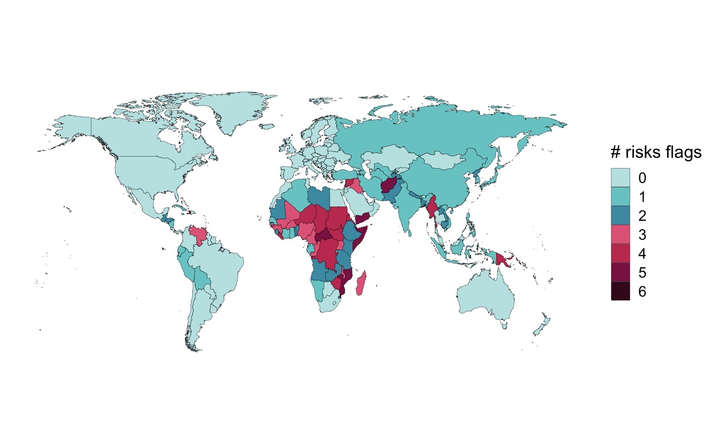
Figure 4: Profile of EMERGING THREATS (i.e. dynamic assessment of changing risk conditions16)
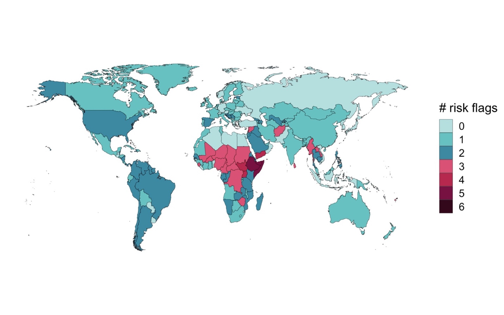
Notes: Level of compound risk devised as the sum of high and medium-risk dimensions (max score = 6). Medium-risks are assigned a score of 0.5, high-risks are assigned a 1. Scores are rounded down to the nearest integer for ease of viewing.
Figure 3 reveals a clustering of underlying vulnerability threats across a range of countries in Sub-Saharan Africa (SSA) and Middle East and North Africa (MENA). Afghanistan, Mozambique and Somalia stand out as countries rated as being especially predisposed to heighted compound risk. Indeed, of the 25 countries with four risk flags or more, only four (Haiti, Afghanistan, Papua New Guinea and Myanmar) are situated outside of SSA or MENA. Unsurprisingly the concentration and spread of underlying vulnerability presented under the CRM has many parallels with many other multi-dimensional risk indexes – such as INFORM and ND-GAIN.
While underlying vulnerability profiles provide an interesting static17 perspective on the potential for compound risk, understanding how current and future risk dynamics are materializing in real-time is often more relevant to operational decision making. Figure 4 showcases levels of emerging threats18 across countries using the same method of calculating compound risk (a combination of high and medium risks).
As a reminder, emerging threats in the CRM reflects countries and regions where there are changes in underlying risk conditions (rather than overall levels of compound risk).19 In particular, Ethiopia and Somalia currently stand out as areas where a number of compound risk dimensions are exhibiting worsening conditions (with 5 emerging threats or more). It is also worth highlighting that much of Latin America has 2 flags, largely reflecting high recent (and ongoing) exposure to COVID coupled with its expected longer-term implications on macro-fiscal and socio-economic conditions. Similar concerns related to the knock-on implications of COVID are experienced across many other regions. Other global signals affecting CRM outcomes include the implications of an ongoing La Nina for regional weather patterns, and heightened food insecurity concerns for much of Sub-Saharan Africa (further compounded by desert locust outbreaks across the Horn of Africa, MENA and South Asia). An annotated summary of regional risk highlights is provided in Annex Figure 1.
As mentioned above, the CRM is also able to provide a high-level overview of overall alert flags, calculated as the geometric mean of underlying vulnerability and emerging threats scores (see Annex Supplementary Text 1 for details). Despite its relative simplicity, this metric can be considered a decent gauge of a country’s overall risk of being affected by compound crises in the months ahead (as opposed to the emerging threats score which largely measures relative changes in underlying risk conditions). Figure 5 reveals a similar cluster of high-risk countries in Sub-Saharan Africa, including much of West Africa, the Horn of Africa and Southern Africa. Pockets of risk are apparent across MENA (namely Yemen, Lebanon and Syria), South Asia (Afghanistan, Sri Lanka), East Asia and the Pacific (Myanmar, Laos, Cambodia, Papua New Guinea) and Latin America and the Caribbean (Columbia, Venezuela and Haiti). While the overall risk scores must be interpreted with caution for reasons outlined above, it does provide an insightful snapshot of the extent of compound risk conditions in the near future and may be relevant for decision makers seeking to make direct comparisons across countries and regions.
Figure 5: Profile of OVERALL ALERT FLAGS (overall alertness needed in responding to given risk dimensions20)
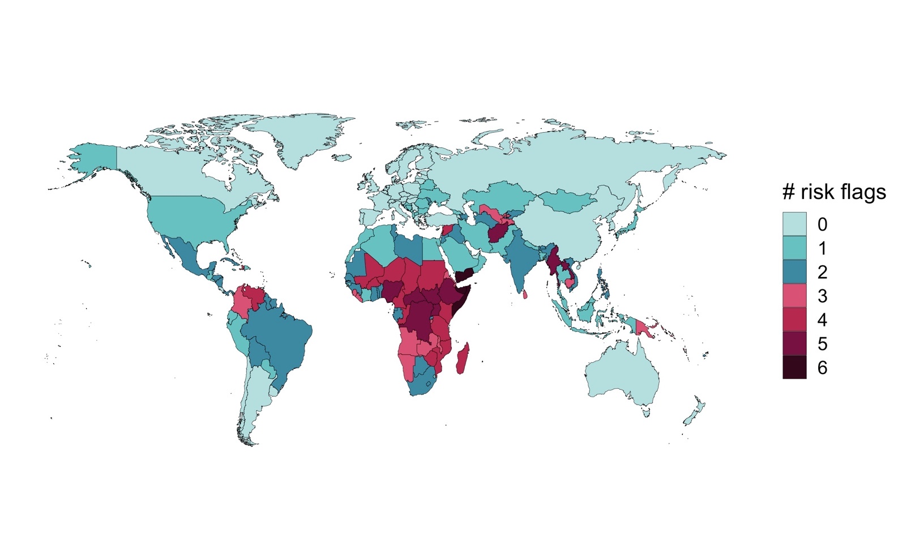
Note: Overall alert flags are using a geometric mean of underlying vulnerability and emerging threats scores. Country-level scores are decised as the sum of high and medium-risk dimensions (max score = 6). Medium-risks are assigned a score of 0.5, high-risks are assigned a 1. Scores are rounded down to the nearest integer.
3.1.2 Population under high alert
Alongside country-level risk profiles, the CRM can also be of use in providing broad regional-level insights on the magnitude of risk conditions in the months ahead. For example, Figure 7 showcases the total regional population and proportion of individuals affected by different risk flags by WB regions. This is done by summing populations in each country in each region – assuming that all those within a country are affected uniformly.
Figure 7: Total population under each risk flag category (emerging threats and overall alert flags)
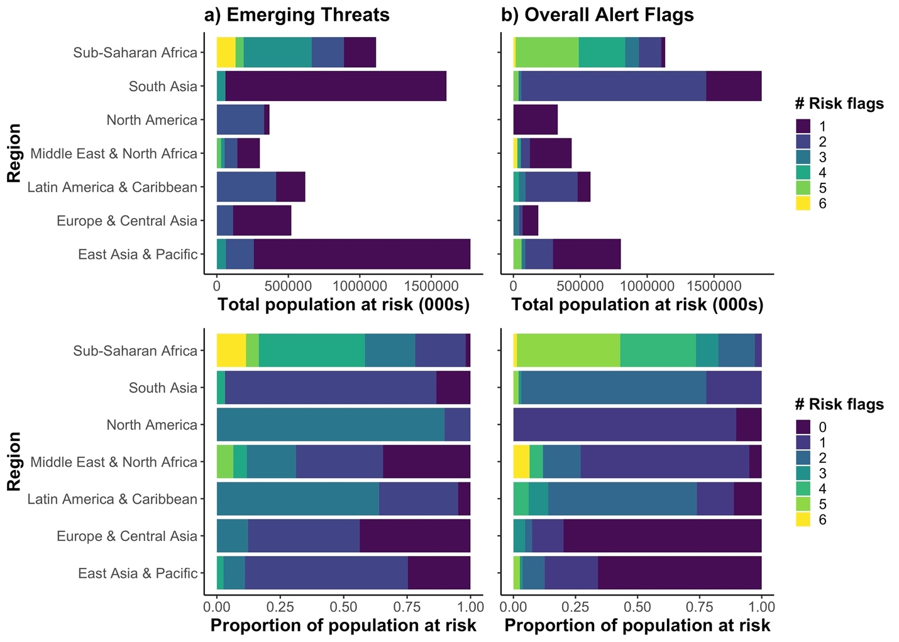
Note: Levels of emerging threats are calculated as the sum of high and medium risk flags (max score = 6). Medium risk flags are assigned a ½, while high risk flags are assigned a 1. Risk scores are rounded down to the nearest integer for ease of viewing. Numbers correspond to the total population of each country in given risk flag categories. All individuals within a country are assumed to be affected in the same way. CAVEAT: This is not meant as a projection of total number of people affected compound crises.
Here we see a wide range of geographic variation in the spread of compound risk, depending on the angle of interest. SSA clearly has the highest number of people covered under four of more emerging threat flags – both in terms of total population and proportion. However, it is interesting to note that MENA has the highest proportion of people classed under the maximum number of flags for the Overall Alert score (combing Underlying Vulnerability with Emerging Threats). Despite this, SSA has a far higher proportion of people with 4 flags of more, signaling that the vast majority of compound risk conditions can be found in the region.
A further break-down of the distribution of risk profiles can be seen in the Sankey diagram depicted in Figure 8. This charts the progression of people exposed to different risk conditions by comparing vulnerability and emerging threats scores. Globally, it is apparent that large shifts can occur between the two respective outlooks. Many of the phase transitions appear to arise in Africa, many of which upgrading from 1 flags for underlying vulnerability to 2–5 flags for emerging threats – suggesting a regional intensification of emerging threats. This contrasts with Asia, where the two categories appear to be more closely aligned.
Figure 8: Number of people moving between different risk categories over time (underlying vulnerability v emerging threats
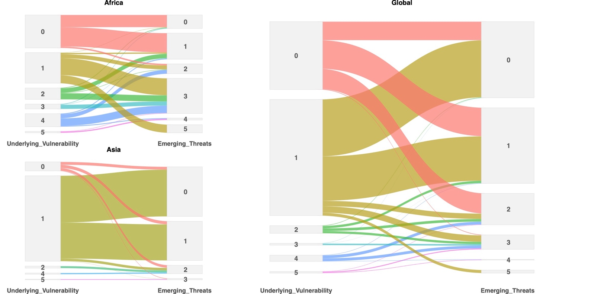
Note: Sankey diagram shows the total population in each risk category between vulnerability and emerging time periods. To calculate total populations each all individuals are assigned the same risk categories for respective countries in the Monitor.
3.1.3 Disaggregated view of risk
Alongside presentations of overall alert flags, there is a wealth of relevant information on risk profiles across individual dimensions. These reveal the detail and nuance of why a given country may be considered highly prone to compound risk and can support tailored sectoral interventions. Figure 9 showcases three countries taken from the CRM, with scores for each of the six emerging dimensions of risk visible. Mozambique stands out as a country with a large number of high-risk signals (five high risk flags and one medium risk). While conditions comparatively not as bad in Brazil, clear emerging threats can be seen with regards to the country’s health system and pandemic response as well as socio-economic vulnerabilities – both of which driven by the widespread impacts of COVID that have ravaged the country in recent months. Spain similarly has a high flag relating to its health system and macro-fiscal conditions – again reflecting toll of high COVID exposure. Again, this does not imply that overall risk levels in Spain are comparable to Mozambique or Brazil. Instead, it implies that risk conditions facing Spain’s health system are similarly deteriorating relative to the normal condition. In addition, while the expected impacts on socio-economic vulnerability in Spain are marked (largely driven by high levels of expected unemployment), risk profiles for the remain three dimensions remain low for the time-being.
Figure 9: Comparing emerging threat scores across the six dimensions of compound risk
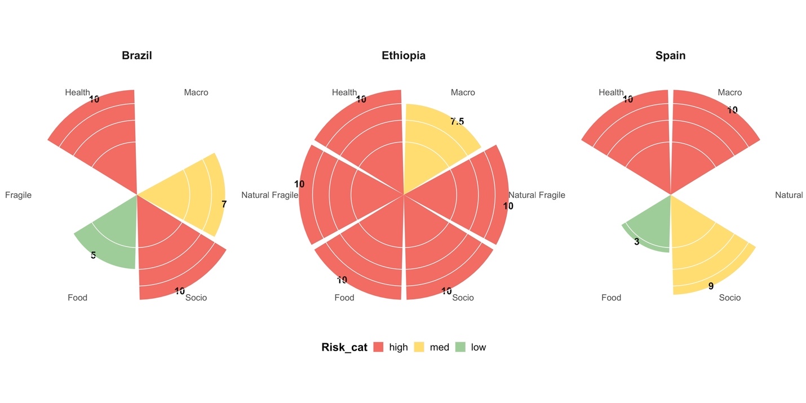
Note:21 Polar diagram shows risk levels for a range of multi-dimensional threats used in the CRM. Scores range from 0–10 for each dimension and are colored according to assigned risk categories (<7 = low risk, 7–9.9 = medium risk and 10 = high). The area under each risk score in the chart is equivalent, meaning that higher scores appear thinner.
4 Areas for further consideration
Given that the CRM is intended as a live resource, source inputs are likely to evolve over time – particularly as new sources of risk information emerge. For further details on diagnostics of the CRM and its outputs see Supplementary Text 3 in the Annex. While efforts have been made to ensure that methodological inputs are a robust reflection of underlying vulnerability and emerging threats conditions, a number of design options should be considered.
Below we highlight priority areas for further development of the CRM:
4.1 Indicator selection
Aligning indicators with ongoing WB monitoring tools. Where possible, the team chose indicators and thresholds aligned with (or sourced from) existing WB risk monitoring initiatives. This includes data from the Food Price Monitor (Food security), Global Economic Prospects (Macro-fiscal), DSSI (Macro-fiscal), and the FCS list (Fragility) amongst others. Going forward, the team will continue to coordinate with relevant teams to ensure that planned WB risk monitoring systems will feed directly into the CRM once launched – including for example, outputs from FCV’s Conflict Risk Monitoring Initiative and AGF’s Food Security Monitoring Hub. In doing so, the hope is to provide a holistic view of risk and minimize different country-level warnings issued across the Bank’s various risk monitoring efforts.
Identify suitable forward-looking indicators for dimensions of compound risk, particularly those with fewer source indicators. Ongoing consideration of the selection of suitable source indicators will continue as the CRM evolves, in close conjunction with relevant sectoral experts across WB units and external partners. Notably, robust sources of information have yet to be identified for a number of emerging dimensions of compound risk. Household-level socio-economic vulnerability is one example where globally-applicable real-time information of changing risk remains scant (despite availability of country-specific and regional databases). In addition, a range of other dimensions are reliant on proxies with limited scope. Efforts will continue in seeking suitable indicators to improve the Monitor. Indeed, the CRM is tailored to easily accommodate new sources of information as they come online. Should no viable proxies be found for some dimensions of compound risk, emerging threats scores will be reflected solely on the number of dimensions with adequate sources.
Refine risk threshold values: The designation of risk thresholds plays a large role in determining the rank of countries across the CRM. At present most of the thresholds are done by via percentiles. However, choice of the cut-off is subjective (typically above the 80th percentile). It also does little to recognize any systematic changes in risk conditions – for example, insights from FEWSNET suggests that medium-term food insecurity is likely to worsen for all monitored countries (implying that the food security threshold may need to be lowered compared with other dimensions of compound risk). One alternative is to assign thresholds in accordance with critical values (rather than percentiles). This could be done via expert elicitation, drawing on insights from a range of technical specialists within the Bank (as well as outside partners).
In most cases, thresholds in the CRM are aligned to classifications used internally by relevant units or programs in the Bank (such as the CRW ERF thresholds), or where there are established external high-risk thresholds used widely. In some cases, neither internal nor external thresholds are available (or readily applicable to the CRM’s methodology). If so, inputs are sought from relevant sectoral teams within the Bank in gauging suitable levels of risk as a guide. Related to issue of compatibility and comparability of indicators of indicators/thresholds within each risk component a number of steps are typically taken in selection.
The selection of thresholds will be subject to continued consultation with the relevant internal teams for further refinement.
4.2 Outputs and user interface
Isolate countries in active crisis. To facilitate the identification of countries that warrant increased vigilance among the universe of countries flagged by the CRM, the team is considering isolating countries in active crisis. This could increase the informational value of the CRM by clearly focusing on countries not currently in crisis but that warrant heightened vigilance going forward.
Link to interactive dashboard and horizon scanning exercise. A digital dashboard will be used to visualize the data-driven outputs of the CRM (see Annex Figures 10–13 for screenshots of the existing prototype). Through this dashboard, the CRM will bring value added as an aggregator of risk information produced by different Bank teams and external partners, directing users to relevant data and resources on different aspects of compound risk. In addition, inputs from the CRM will be combined with a qualitative assessment (through regular horizon scanning meetings) will help ground-truth its outputs, reflect latest developments not captured in the data (i.e. political economy developments), and explore the different likelihood and potential impacts of key risk dimensions.
4.3 Opportunities and next steps
Beyond the methodological refinements described above, there are a number of opportunities that the team will consider in future iterations to expand the scope and value of the CRM. These include:
Model and weight interactions between dimensions of compound risk. The CRM currently models each dimension separately. This is done to promote transparency and simplicity – given the considerable complexities associated with predicting interactions across different threats. Future iterations of the CRM may wish to consider the use of functions that express how two (or more) dimensions of compound risk are likely to interact (whether increasing or diminishing overall levels of risk).
Factor in sub-national risk information. The CRM is currently focused on country-level risks. With that in mind, most of the indices and indicators are carried out at the national level. However, this does not account for potential heterogeneity within a country – recognizing that risk factors may differ from one region to the next. It also makes it difficult to use data collected at high spatial resolutions – such as satellite data, of information focused solely on urban environments. One option may be to combine the CRM with sub-national data using the Dashboard (as an added map layer). A similar approach is used by WFP’s Hungermaps live.
Factor in seasonality and intra-annual components. Issues of compounding risk are often affected by seasonality or factors that vary within a year. For example, the impacts of above/below average rainfall are especially relevant during growing seasons in countries highly reliant on agriculture; the socio-economic impacts of COVID are pronounced during the timing of peak exposure (and stages of policy response). While it is difficult to factor these into the CRM holistically, it is important to consider how issues of seasonality can be incorporated. At present, this is being trialed in calculating future natural hazard risks and conflict risk – though there may be opportunities to add temporal dimensions to other dimensions of compound risk.
5 Annex
Table 1: Indicator selection of each compound risk dimension: How underlying vulnerability is reflected in the CRM
| Quality of Indicators (Q) | GOOD |
| ACCEPTABLE | |
| POOR |
| Indicator Name | Indicator Description | Norm. Bounds and Thresholds | Source Indicators | Aggregation | Indicator Quality |
|---|---|---|---|---|---|
| Food Security Risk | |||||
| F_GFSI_norm | The Economist’s Global Food Security Index | Normalised using a min/max procedure with a lower bound of 90th pct and upper bound of 10th pct | Use GFSI when indicator is available for a country; Use Proteus Composite Index as a backup when data is unavailable | ||
| F_Proteus_Score_norm | WFP Proteus composite index, measuring multidimensional aspects of food security | Normalised using a min/max procedure with an upper bound of 90th pct and lower bound of 10th pct |
Multidimensional index made up of grouped indicators for: Availability; Access; Utilization; and Stability |
||
| NOTES: Index only runs till 2017. The CRM may want to consider updating WFP’s methodology using data gathered through 2020, as well as assigning thresholds on the basis of expert derived values (rather than percentiles). Alternatives include the Global Food Security Index, as well as metrics on the prevalence of undernourishment and food consumption | |||||
| Conflict Fragility and Institutional Risk | |||||
Fr_FCV_normalised
|
World Bank’s Fragile and Conflict-affected Situations list |
Assigned values in consultation with FCV. 10 = If on FCS list 0 = If not on FCS list (based on FCS thresholds) |
Multidimensional index including information on the following: Country Policy and Institutional Assessment (CPIA) scores, whether a UN peacekeeping operation is present, the severity of border flight, and conflict-related deaths. |
MAX(Fr_FCV_normalised, Fr_FSI_norm |
|
| Fr_FSI_norm | Fund for Peace’s Fragile States Index | Normalised using a min/max procedure with an upper bound of 98th pct and lower bound of 40th pct | |||
| NOTES. CRM team will continue to liaise with FCV’s ongoing conflict risk monitoring initiative to ensure consistency in indicator selection and thresholds. | |||||
| Macro-Fiscal | |||||
| M_MFR_Watchlist | Macro-financial Vulnerabilities Country Watchlist (WB) |
10 = High 7 = Medium 0 = Moderate |
Use Watchlist; if no data, use DSA; if no data, use MFR Risk Rating; if no data, use EIU’s Operational Risk Score | ||
| M_DSA_Rating | IMF–World Bank Debt Sustainability Analysis |
10 = High or In distress 7 = Medium 0 = Moderate |
|||
| M_Macro_Financial_Risk | Macro-Financial Review Risk Rating |
10 = High 7 = Medium |
|||
M_EIU_Score_12m_norm
|
Economist Intelligence Unit’s Country-level Operational Risk Score: a multi-dimension index tracking macro-fiscal conditions updated on a monthly basis Values are derived as an average of EIU scores in macroeconomic risk, financial risk, and foreign trade & payments risk for the previous 12 months (in order to be compatible with other risk dimensions) |
Normalised using a min/max procedure with an upper bound of 95 and lower bound of 10. | A multidimensional index comprised of grouped indicators relating to: financial risk, foreign trade & payments risk, infrastructure risk, labour market risk, legal & regulatory risk, macroeconomic risk, and tax policy risk. | ||
| Alternatives: An alternative index is currently under development together with MTI, FCI, CROCR and the Prospects Group | |||||
| Health-Systems, Disease Outbreaks and Response | |||||
H_HIS_Score_norm
|
Global Health Score Index, a composite index made up of a variety of health-related indicators | Normalised using a min/max procedure with an upper bound of 20 and lower bound of 70 | GHS is made up of six categories (comprised of 34 indicators, 85 sub-indicators). The categories include: prevention; detection and reporting; rapid response; health system; compliance with international norms; and risk environment. For more details see link. |
Single Index |
|
| Natural Hazard Risk | |||||
NH_Hazard_Score_norm
|
Natural multi-hazard rating (INFORM) – 2022 data | Normalised using a min/max procedure with an upper bound of 7 and lower bound of 1 | Historical rates of exposure and sensitivity to earthquake, tsunami, flood, cyclone, storm surge and drought risk. For more details see link. |
Single Index |
|
| Socioeconomic Vulnerability Risk | |||||
S_INFORM_vul_norm
|
Composite index comprised of a range of socio-economic variables compiled by INFORM | Normalised using a min/max procedure with an upper bound of 7 and lower bound of 0 | Comprised of grouped indicators relating to: development and deprivation (50%); inequality (25%) and economic dependence (25%). |
Single Index |
|
Table 2: How forward-looking risk is reflected in the CRM
| Quality of Indicators (Q) | GOOD |
| ACCEPTABLE | |
| POOR |
| INDICATOR NAME | INDICATOR DESCRIPTION | NORMALISED BOUNDS | AGGREGTION | Q |
|---|---|---|---|---|
| Food Security Risk | ||||
F_fews_crm_norm
|
FEWSNET IPC classification (near term) adjusted. Thresholds chosen to align with CRW ERF trigger. |
Assigned values based on CRW threshold:
10 = CRW threshold |
Max of three indicators | |
F_fao_wfp_warning
|
Food security early warning released jointly by FAO and WFP. Thresholds chosen to align with FAO/WFP classification. |
10 = on FAO/WFP list of early warning countries 0 = if not on FAO/WFP list |
||
F_fpv_rating
|
Food price inflation from WB microdata for monthly food prices Thresholds chosen to align with FRM classification. |
Assigned values based on IPA threshold: 7 = FPV above 30% 5 = FPV between 5–30% 3 = FPV between 2–5% 1 = FPV below 2% |
||
| NOTES Primary challenge in finding robust information for non FEWSNET covered countries. CRM team will seek to draw food price data and additional FS indicators from the WB’s Food Security Monitoring Hub. Alternatives: NDVI / GIEWS / WB Food Security Monitoring Hub | ||||
| Macro-Fiscal | ||||
M_MFR_Watchlist
|
Macro-financial Vulnerabilities Country Watchlist (WB) |
10 = High 7 = Medium 0 = Moderate |
Use Watchlist; if no data, use DSA; if no data, use MFR Risk Rating; if no data, use EIU’s Operational Risk Score | |
M_DSA_Rating
|
IMF–World Bank Debt Sustainability Analysis |
10 = High or In distress 7 = Medium 0 = Moderate |
||
M_Macro_Financial_Risk
|
Macro-Financial Review Risk Rating |
10 = High 7 = Medium |
||
M_EIU_12m_change_norm
|
Point change in the average of Economist Intelligence Unit’s Country-level Operational Risk scores for macroeconomic risk, financial risk, and foreign trade & payments risk. The EIU Operational Risk is a multi-dimension index tracking macro-fiscal conditions updated on a monthly basis. Values are based on the difference between the latest EIU monthly score and an average of scores over the past 12 months. |
Normalised using a min/max procedure with an upper bound of 95th pct and lower bound of 10th pct | ||
| NOTES: An alternative index is currently under development together with MTI, FCI, CROCR and the Prospects Group | ||||
| Fragility And Conflict Risk | ||||
Fr_BRD_Normalised
|
Fatalities related to violent events, demonstrations or non-violent actions (ACLED). Indicator is calculated as 3-month running Z-scores using 3-month means and standard deviations for the past three years. Thresholds assigned by FCV |
Normalised using a min/max procedure with an upper bound of 1 and lower bound of 0; if there are fewer than 26 deaths in 3-month period, indicator is set to 0 |
Max of five indicators |
|
Fr_acled_events_increase_norm
|
Protests, demonstrations, and violent events (ACLED). Updates weekly . Percentage increase in the number of conflict events in the past month, relative to the past year’s monthly average |
Normalized using a min/max procedure with an upper bound of 25% increase and a lower bound of no change | ||
Fr_REIGN_Normalised
|
Indicator is formed by summing results from 4 REIGN binary variables, including: successful coup; attempted coup; delayed election; and irregular election. Inputs from election variables are only considered in FCS countries. *REIGN is currently inactive; it is currently replicated using election data from the International Foundation for Electoral Systems , and coup data from the Global Instances of Coups dataset . Thresholds assigned by FCV |
10 = at least one event across the REIGN indicators 0 = no events across the REIGN indicators |
||
ACAPS Risk List
|
Events related to conflict and fragility recorded by ACAPS |
10 = High risk 7 = Medium risk 3 = Low risk |
||
| EIU Security Risk |
Point change in Economist Intelligence Unit’s Country-level Operational Risk scores for Security Risk, excluding hostility to foreign. The EIU Operational Risk is a multi-dimension index tracking macro-fiscal conditions updated on a monthly basis. Values are based on the difference between the latest EIU monthly score and an average of scores over the past 12 months. |
Normalised using a min/max procedure with an upper bound of 95 th pct and lower bound | ||
| NOTES: To be updated based on coordination with FCV’s Conflict Risk Monitoring Initiative. | ||||
| Socioeconomic Vulnerability | ||||
S_unemp_norm
|
Percentage point change in proportion of people unemployed between 2022–2021 and 2021–202022 (IMF forecast) | Normalised using a min/max procedure with an upper bound of 1 percentage point and lower bound of 0 | Max of four indicators | |
S_pov_comb_norm
|
Percentage point change in the proportion of people below $2.05 poverty line 2022–2021 and 2021–202023 (WB/MPO) | Normalised using a min/max procedure with an upper bound of 0.5 percentage points and lower bound of 0 | ||
S_Household.risks
|
Measure of household debt-to-GDP ratios and unemployment rates during the previous quarter |
10 = Marked red (high risk) 7 = Marked yellow (medium risk) 0 = Marked green (low risk) |
||
ACAPS Risk List
|
Events related to socioeconomic vulnerability recorded by ACAPS |
10 = High risk 7 = Medium risk 3 = Low risk |
||
| Natural Hazard Risk | ||||
NH_seasonal_risk_norm
|
Measure of the proportion of a country projected to experience above or below average rainfall (with 60+ likelihood and above) using Columbia IRI’s seasonal forecast. To be updated based on ongoing research and collaboration with IRI | 10 = if a critical proportion of the country is wet or if a critical proportion is dry. Critical proportion is determined by country size. | MAX(NH_seasonal_risk_norm, NH_GDAC_Hazard_Score_Norm, NH_INFORM_Crisis_Norm, NH_locust_norm) | |
NH_natural_acaps
|
INFORM Crisis monitor with live tracking of natural hazard events | Normalised using a min/max procedure with an upper bound of 7 and a lower bound of 1 | ||
NH_GDAC_Hazard_Score_Norm
|
GDACS live natural hazard tracker |
Assigned value: 10 = if ongoing Natural Hazard 0 = no ongoing Natural Hazard |
||
NH_locust_norm
|
FAO desert locust outbreak risk |
Assigned value: 10 = High risk based on FAO thresholds 7 = Medium risk based on FAO tresholds 0 = Low risk based on FAO thresholds |
||
ACAPS Risk List
|
Events related to conflict and fragility recorded by ACAPS |
10 = High risk 7 = Medium risk 3 = Low risk |
||
| NOTES: Thresholds for seasonal precipitation are temporary and will be updated based on ongoing research together with IRI. Alternatives: Flood outlook (GLOFAS) – 4 month seasonal outlook + 10-day forecast. Drought monitor/outlook (IRI Global SPI Index / SPEI / CHIRPS / EDO). Live cyclone tracks (Cyclocane) – 1–10 day. Live natural hazard trackers –USGS / RSOE / GDACS / Reliefweb / Copernicas / PDC | ||||
| Health-Systems, Disease Outbreaks And Response | ||||
H_ifrc_epidemics
|
Epidemics announced by IFRC |
10: On list NA: Not on list |
Max of two indicators | |
H_who_don_alert
|
WHO Disease Outbreak News (DON) Alert |
Assigned value: 10 = if country if on WHO DON list 0 = if county not on WHO DON list |
||
| NOTES May benefit from clustering indicators into different aspects of risk rather than max value across all. Use of USC projections done on the basis of comparison amongst a number of COVID projections. Will require careful consideration of thresholds | ||||
TABLE 3: Methods for aggregating compound risk dimension scores into overall alert flags
| AGGREGATION METHOD | DESCRIPTION | METHOD |
|---|---|---|
| Max score | Count of the total number of compound risk dimensions flagged as high-risk flag (i.e. score of 10) | COUNT(IF Risk Dimension = 10) |
| Max + medium scores | Count of the total number of compound risk dimensions flagged are high-risk (i.e. score of 10), as well as medium-risks (i.e. score 7–10) | COUNT(IF Risk Dimension = 10) * 1 + COUNT(IF Risk Dimension > 7) * 0.5 |
| Geometric scores | Count of the total number of compound risk dimensions flagged high risk flags a geometric average (i.e. score 7–10) | COUNT(IF Geometric Risk Dimension > 7) |
| Note: Geometric method can use either the max score or max+medium approaches as source inputs for emerging threats. Threshold values may also vary depending on whether indicators are aggregated using a max value or geometric method (in which case high risk is likely to be <7 rather than =10. |
5.1 Supplementary Text 1
Alternative aggregation option 1: Mean
An alternative method of aggregation is to use an average across all source indicators. This can be done in a number of ways. The simplest is to use a regular arithmetic mean, which assigns an equal weight to all source indicators.
\[RiskDriverAv_{r} = \ \frac{1}{N}\sum_{i = 1}^{N}{IndicatorNorm_{i}}\]
Here, \(RiskComponentAv_{r}\) relates to the average risk score for a given dimension r, taken as the average of all normalized indicators (\(i = 1\ldots n\)).
| PROS |
|---|
| Similar to the max value method use of an arithmetic mean is simple to calculate. It also allows for any divergence in the suite of source indicators to be factored in (especially important where there may be outliers). |
| CONS |
| The main disadvantage is that the meanings of averaged scores are harder to interpret. Unlike with the max value (where a score of 10 meant that at least one indicator threshold has been exceeded), averaged scores have to be interpreted as a combination of all source indicators. Moreover, use of an average results in far fewer countries with scores of 10. This requires a subjective choice in assigning lower thresholds for each of the risk characteristics. |
A second related option is to take an average of grouped indicators. Here, source indicators are assigned in relation to whether they reflect changes in underlying risk capacities (represented by \(CapacityNorm_{c}\)) or outcomes (\(OutcomeNorm_{o}\)). The maximum value in each group is then selected, with an average taken between the two groups.
Averaging can either be done via a simple arithmetic mean:
\[RiskDimensionMaxAv_{r} = \ \frac{1}{2}\left( \max_{c = 1\ldots n}\left\{ CapacityNorm_{c} \right\} + \max_{0 = 1\ldots n}\left\{ OutcomeNorm_{o} \right\} \right)\]
Or using a geometric mean, as recommended by Guillaumont (2009) for risk analysis where grouped outcomes are likely to multiply.
\[RiskDimensionMaxGeo_{r} = \ \sqrt[2]{\max_{c = 1\ldots n}\left\{ CapacityNorm_{c} \right\}\ \cdot \max_{0 = 1\ldots n}\left\{ OutcomeNorm_{o} \right\}}\]
| PROS |
|---|
| Grouping of the two allows for dimensions of compound risk with different types of indicators to be assessed (while diminishing the influence of indicators that have strong overlaps). For example, in the case of ‘Health-systems, disease outbreaks and response’, an average of max group values allows for closely-aligned outcome-based measures (such as COVID deaths, cases, growth rates etc.) to be compared alongside the tracking of changes in countries’ sensitivity (such as a Government’s preparatory measures and lockdown procedures) – see Table 2. In addition, choice of geometric mean takes into account the fact that capacity and outcome related measures are likely to compound (i.e. they have a multiplicative relationship rather than an additive one). A similar approach is adopted by a number of other multi-dimensional risk indexes – including INFORM. |
| CONS |
| In many ways, underlying vulnerability and emerging threats are not directly comparable as source indicators cover different underlying capacities and outcomes. Despite this, efforts are made to ensure that grouped indicators overlap and provide valuable information (with some degree of caution needed in in interpreting outputs). In addition, and as outlined previously, any averaging method is likely to be less interpretable than a simple max value method. |
Given that the CRM is designed as a flagging system, signaling potential changes in emerging threats conditions rather than generating a precise risk index, use of a max value system is chosen as a default. However, users will be able to access and download all data inputs within the CRM and apply their own aggregation methods if appropriate to their needs. In addition, the CRM team will use the initial phase of implementation to review and validate the choice of default aggregation method.
5.2 Supplementary Text 2
5.2.1 Filtering methodology for calculating Overall Compound Risk
An alternative to the aggregation method for calculating Overall Compound Risk flags is to apply a filter. In this way, instead of calculating a combined average of Emerging Threat and Underlying Vulnerability, Overall Compound Risk is flagged on the basis of whether both of the two source inputs are considered high or medium risk. For example, the most basic filtering system for Overall Compound Risk designates a given dimension as high risk if both Emerging Threat and Underlying Threat scores are scored as 10 (i.e. high risk). All remaining values would be classified as ‘not high risk’.
\[OverallCompoundRisk_{r} = \ \left\{ \begin{matrix} HighRisk \ \ \ \ \ \ \ \ \ \ \ \ \ \ EmThreat_{r}\mathbf{=}10\mathbf{\ AND\ }UnderVul_{r} = 10 \\ \\ NothighRisk\ \ \ \ \ \ \ \ \ \ \ \ \ EmThreat_{r} < 10\mathbf{\ OR\ }UnderVul_{r} < \ 10 \\ \end{matrix} \right.\ \ \]
\[OverallCompoundRisk_{r} = \ \left\{ \begin{matrix} HighRisk\ \ \ \ \ \ \ \ \ \ \ \ \ \ \ EmThreat_{r}\mathbf{=}10\mathbf{\ AND\ }UnderVul_{r} = 10 \\ \\ NothighRisk\ \ \ \ \ \ \ \ \ \ \ \ \ EmThreat_{r} < 10\mathbf{\ OR\ }UnderVul_{r} < \ 10 \\ \end{matrix} \right.\ \ \]
While the method above is simple and clear to understand, it results in far fewer risk dimensions being flagged compared to the aggregate method – largely because it requires thresholds to be breached both in relation to Underlying Vulnerability and Emerging Threats. A more practical measure may involve lowering the critical threshold for designating dimensions as high risk (similar to the use of 7 rather than 10 as that threshold in the aggregation method). While this provides greater comparability with the aggregate method, as well as a broader spread of high-risk countries, it inherently involves some degree of subjectivity given that there is no empirical rationale for the selection of 7 as a cut-off (as opposed to 10 which implies that source indicators are above expert-derived thresholds).
\[OverallCompoundRisk_{r} = \ \left\{ \begin{matrix} HighRisk\ \ \ \ \ \ \ \ \ \ \ \ \ \ EmThreat_{r} > 7\mathbf{\ AND\ }UnderVul_{r} > 7 \\ \\ NothighRisk\ \ \ \ \ \ \ \ \ \ \ \ \ EmThreat_{r} < 7\mathbf{\ OR\ }UnderVul_{r} < \ 7 \\ \end{matrix} \right.\ \ \]
A final measure seeks to add further nuance by recognizing dimensions that that are just below the threshold for high risk. In this way, the filtering system separates alert levels according to high, medium and low risk – without the need to aggregate underlying vulnerability and emerging threat. The system is very similar to designations listed under the quadrant heatmap shown in Annex Figure X.
\[OverallCompRisk_{r} = \ \left\{ \begin{matrix} HighRisk\ \ \ \ \ \ \ \ \ \ \ \ \ \ \ \ \ \ \ \ \ \ \ \ \ \ \ \ \ \ \ \ \ \ \ \ \ \ \ \ \ \ \ \ \ \ \ \ \ \ \ \ \ \ \ \ \ \ \ \ \ \ \ \ \ \ \ \ \ \ \ \ \ \ \ \ \ \ \ \ \ \ \ \ \ \ \ \ \ \ \ \ \ \ \ \ \ \ \ \ \ \ \ \ \ \ \ \ \ \ EmThreat_{r} > 7\mathbf{\ AND\ }UnderVul_{r} > 7 \\ MediumRisk\ \ \ \ \ \ \ \ \ \ \ {\ \ (EmThreat}_{r} < 7\mathbf{\ AND\ }UnderVul_{r} > \ 7)\ \mathbf{OR}\ {(EmThreat}_{r} > 7\mathbf{\ AND\ }UnderVul_{r} < \ 7)\ \\ \ LowRisk\ \ \ \ \ \ \ \ \ \ \ \ \ \ \ \ \ \ \ \ \ \ \ \ \ \ \ \ \ \ \ \ \ \ \ \ \ \ \ \ \ \ \ \ \ \ \ \ \ \ \ \ \ \ \ \ \ \ \ \ \ \ \ \ \ \ \ \ \ \ \ \ \ \ \ \ \ \ \ \ \ \ \ \ \ \ \ \ \ \ \ \ \ \ \ \ \ \ \ \ \ \ \ \ \ \ \ \ \ \ \ \ \ \ \ EmThreat_{r} < 7\mathbf{\ }\mathbf{AND}\mathbf{\ }UnderVul_{r} < \ 7 \\ \end{matrix} \right.\ \ \]
This is much closer to the general approach adopted by the CRM – though note that all filtering approaches result in an categorical alert levels (rather than numeric scores ranging from 0–10). For this reason, we use the aggregation method as a default for calculating Overall Compound Risk in the CRM, though allow users to choose alternative methods using the online interactive dashboard (including filtering) based on preferences.
5.3 Supplementary Text 3
5.3.1 Diagnostics and comparisons
Aside from the global risk maps, there are a wide range of descriptive analyses that can be used to unpack findings from the CRM. Heatmaps are an example of visual tool that helps to convey a holistic picture of risk conditions for countries and risk dimensions. As a reminder, the CRM provides three country-level risk profiles for each of the six risk dimensions. These include measures of: Underlying Vulnerability; Emerging Threats; and Overall Alert Flags. All three scores are broadly related. In particular, Overall Alert Flags are made up of a combination of the Vulnerability and Emerging Threat scores, acting as a gauge of the vigilance required in monitoring ongoing risk conditions in the coming months. Having said that, each score can be viewed as a stand-alone, covering different aspects of risk of relevance to decision makers. As such, the CRM is designed to provide information for range of different user-needs: whether highlighting countries predisposed to compound crises (Underlying Vulnerability); identifying countries where risk conditions are likely to deteriorate rapidly (Emerging Threats); or gaining a general sense of upcoming compound risk hotspots in the months ahead (Overall Alert Flags).
Perhaps the easiest way to understand the relationship between the three measures is to plot heatmaps for each risk dimension (and country). Figure 6 shows country-level profiles for all six risk dimensions by plotting Underlying Vulnerability on the X-axis against Emerging Threats on the Y-axis. Dots represent individual country scores (in instances where multiple countries have the same score dots are scaled according to the number of countries). A selection of random countries is highlighted to show case where different types of countries fall within the heatmap. Heatmaps can also be used to assess the risk profile of individual countries as shown in Annex Figure 5. Shaded regions denote Overall Alert Flags, showcasing which risk category a country falls under, ranging from high-alert in red (representing Alert Level scores between 7–10) medium-alert in orange (scores of 5–7) and low-alert (0–5). Regions are shaded according to the default procedure used in aggregating Overall Alert Flags: a geometric average of Underlying Vulnerability and Emerging Risk. Alternative aggregation procedures are shown in supplementary heatmaps found in Annex Figures 3 and 4.
The heatmaps in Figure 6 show a number of interesting traits. Firstly, the distribution of scores varies considerably across the six risk dimensions. This largely reflects the different nature of underlying indicators and thresholds used. For example, most risk dimensions feature country scores that are evenly scattered across the heatmap as indicators used to populate Vulnerability and Emerging Threat elements are continuous (both in relation to raw data and normalized thresholds). However, some appear more segmented. For example, the wide horizontal spread between dots in the Conflict dimension reflects the fact that underlying vulnerability for conflict risk is represented by a binary variable (i.e. whether a country is on the FCS list or not). While there are good reasons for limiting the conflict risk to the FCS variable (further outlined in Box X) this results in a stark spread of values in the heatmap and highlights the limitations of the current approach. It is for this reason that aggregation of Overall Alert Flags is carried out using an arithmetic mean as opposed to a geometric mean (as can be seen by the different risk classification shadings in the Conflict heat map). This accounts for the fact that countries not included on the FCS list (and therefore an Underlying Vulnerability score of 0) would only ever be classified A low alert status – irrespective of the country’s Emerging Threat score. As such, the arithmetic mean allows for non-FCS country with an Emerging Threat score of 10 to be classified as medium-alert status instead (note that is not possible for a non-FCS country to be grouped as high alert).
The heatmaps are also useful in revealing implications of aggregation in determining Overall Alert Flags. The default in the CRM is to use a geometric mean using values for Underlying Vulnerability and Emerging Threats. The shaded regions in the heatmap reveal how different combinations of scores result in high, medium and low alert outcomes. For example, countries classified as high alert tend to be those that have generally have high scores on both Vulnerability and Emerging Threat elements of the CRM. Looking closer to the boundary, countries can also be classified high alert if they score a 10 in one of the axes (Threat or Vulnerability) and 5 in the other.
It is these boundary cases that are of most interest when it comes to classifying countries. In using a geometric mean as the CRM’s default, clear judgement calls are apparent in looking at the shaded regions of the heatmap. For example, a country that scores a 10 on one of the axes and a 0 on the other would be classified under a low alert level. This is done to reflect the fact that the CRM is an early warning system pointing to overall levels of vigilance needed in responding to changing risk conditions. With that in mind, a country that has very high levels of vulnerability to fragility (such as Afghanistan) but currently experiencing a dramatic fall in conflict-related deaths would be placed under low alert – recognizing that conflict related risks are likely to be reduced in the coming months compared to expected norms. With the same example in mind, use of a different aggregation procedure, such as an arithmetic mean (show in Annex Figure 3), would mean that no matter what current conditions are being experienced a highly vulnerability country (i.e. an Underlying Vulnerability score of 10) would always be classified under the medium or high alert bracket. Returning to use of a geometric mean, a country that has experienced a recent uptick in disease outbreaks (say as doubling of COVID-19 deaths from 20 to 40), but has a highly effective health care system would similarly be placed under low alert. This is done to recognize the country’s high levels of resilience in dealing with the threat – though it is worth pointing out the limitations of this approach if the threat is exceedingly large.
While choice of aggregation procedure can have important implications for designating Overall Alert Flags, it is important is important to note that all three scores will be shown under the CRM database and dashboard – allowing users to get a holistic picture of threat conditions and make judgements based on their own needs. Similarly, users will be able to choose between different aggregation procedures (such as geometric and arithmetic means) allowing them to tailor the CRM to given preferences.
Figure 6: Heatmap showing relationship between the CRM’s three outputs
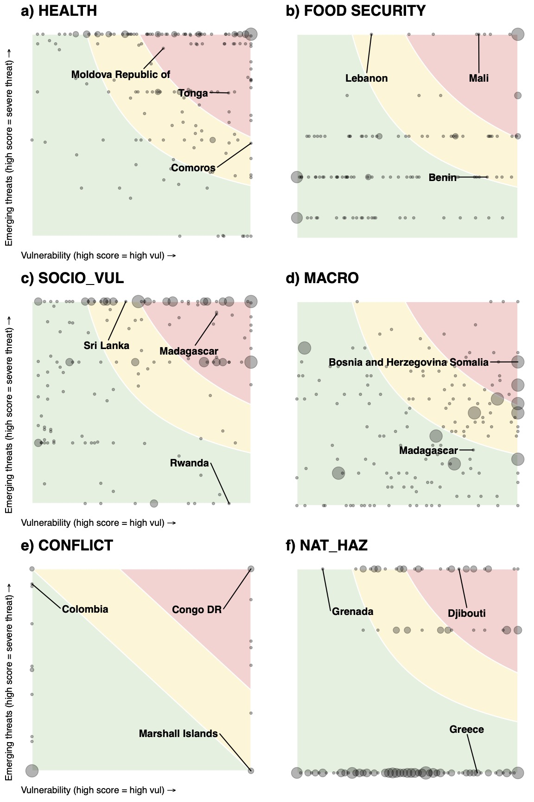
Heatmaps present information from three scores related to Underlying Vulnerability (X-axis), Emerging Threats (Y-Axis) and Overall Alert Level (shaded areas). Shaded areas relate to high-alert status (red), medium-alert status (yellow) and low-alert status (green). All shaded areas are derived according to a geometric mean, aside from conflict which is devised using an arithmetic mean.
In order to further probe key outputs and methodological options within the CRM we analyse the large amount of analytical data produced by the early warning system. As mentioned above, the main focus of the analysis is on the CRM’s underlying vulnerability and emerging threats outlooks – though comparisons are also drawn to the overall risk measure where relevant (alongside more detailed descriptions in Annex Supplementary Text 1 and Annex Table 6).
A first step in uncovering insights from the CRM is to compare how levels of underlying vulnerability correlate with emerging threats. Figure 10 shows a count plot comparing scores from the two outlooks (with further disaggregation by region). The plot suggests that the relationship between the two variables is modest (with a correlation coefficient of 0.32). In general, countries that are historically predisposed to multi-dimensional threats are often those likely to be affected by numerous emerging threats. However, there relationship differs across continents. While the relationship is positive in Africa, Europe and to a certain extent Asia, trends are somewhat negative for the Americas and Oceania. The latter implying that many countries with low emerging threats flags are currently experience high emerging threats conditions (and vice versa).
Figure 10: Comparison of Emerging threats and Underlying vulnerability Flags under the CRM
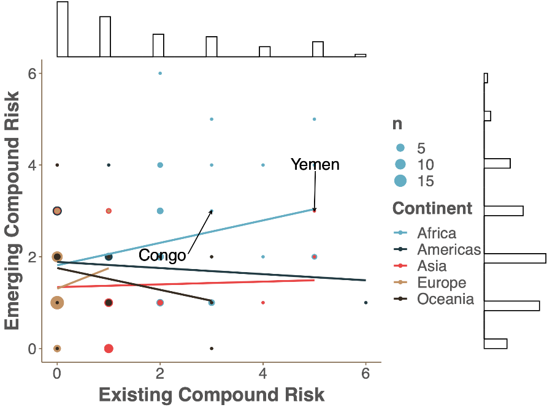
Note: Count plot shows the frequency of different risk combinations split according to five continents (each colored differently). The size of each dot corresponds to the number of countries assigned the respective score. Histograms for emerging threats and underlying vulnerability are shown on the outside.
We can probe this further by looking at correlations between emerging threats and underlying vulnerability dimensions (Figure 11). Here we see two important factors. Firstly, most risk dimensions appear to be positive correlated. Clear exceptions can be seen with regards to emerging Health risk. This may be suggestive of the fact that Health threats are currently experienced in countries that are otherwise less-affected by other multi-dimensional threats (and vice versa) – a trend that appears consistent with the current spread of COVID risk, as many countries in Europe and North America struggle to contain the virus. A second clear observation is that scores across the six underlying vulnerability dimensions are more highlight correlated than for emerging threats dimensions. While this may reflect the nature of current risk conditions, it may also be partly due to fact that underlying vulnerability dimensions tend to feature a heavy use of multi-dimensional indexes (that are likely to overlap slightly across different dimensions). This is one of the reasons why case should be taken in direct comparisons between underlying vulnerability and emerging threats (particularly as it relates to the combined overall risk score).
Figure 11: Correlation plot between emerging threats and underlying vulnerability dimension scores
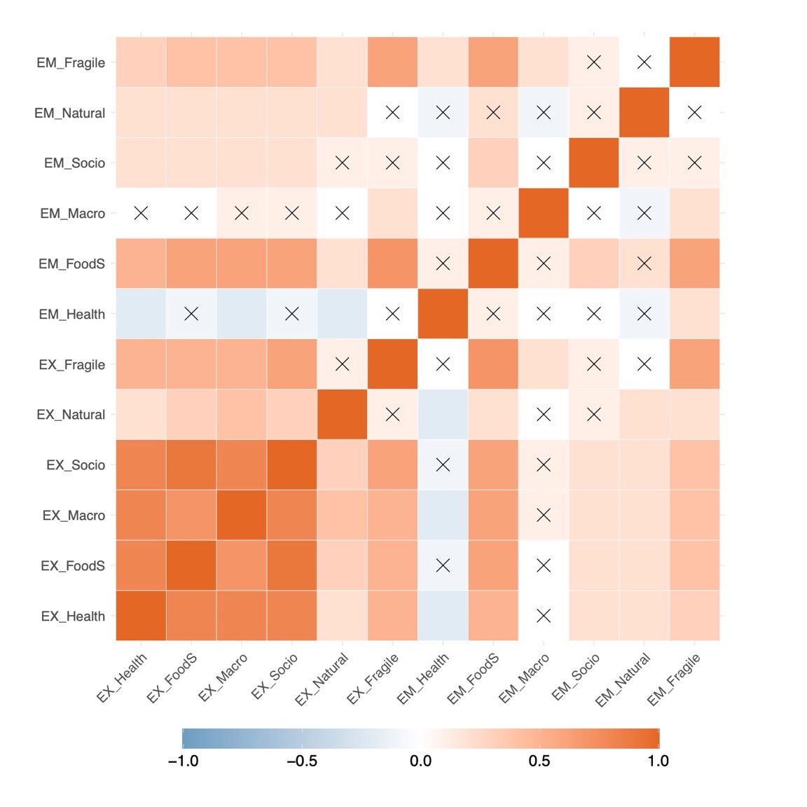
Note: Plot displays correlation coefficients between emerging threats and underlying vulnerability dimensions of compound risk. Red boxes correspond to a positive correlation, while blue boxes reflect negative associations. Box marked with an X are not statistically significant. Dimensions with an ‘ET’ relate to Emerging threats while those labelled ‘EV’ relate to Underlying vulnerabilities.
Another important point of comparison is to look at different risk outcomes using the various methodological options for aggregation outlined in the methodology (Section 2). As highlighted above, the current default in the CRM is to aggregate country-level risk dimension scores by taking the maximum value across the series of source indicators. This method is chosen because it provides decision makers with a conservative estimate of compound risk. It is also simple to understand and transparent, particularly when calculating overall levels of compound risk.
However, a number of alternatives were laid out in Section 2.1. One notable option is in calculating compound risk dimension scores as an average of all grouped indicators within each risk dimension. This can either be done use an arithmetic or geometric mean – the latter of which tends to be favored in other multi-dimension risk indexes such as INFORM, especially when indicators are gathered across aspects of exposure, sensitivity and response capacity.
Figure 12 plots country-level changes in scores and ranks between max value and geometric means for the Health risk dimension. Left hand columns show country rankings using the default max value system, while right hand columns show rankings with a geometric mean (i.e. mean values across all grouped indicators for Health risk). As is clear from the plot, mean values tend to be somewhat lower than the max value approach – perhaps unsurprisingly given the bread of indicators used. A similar feature can be seen when comparing histograms between max value and mean approaches across the other risk dimensions (as seen in Annex Figure 2). This is one of the reasons why classification levels using means are far lower (and somewhat subjective) when compared with the simplicity of max value classifications (as all values of 10 simply meant that at least one of the grouped indicators is above the designated threshold). Rankings can also differ considerably, especially as many high-risk countries under the max value approach are prone to dropping down significantly when using means. As a reminder, the strengths and limitations of the two approaches is discussed in Section 2.5.
Figure 12: Rank Comparison of max value and geometric mean options used in calculating compound risk dimension scores
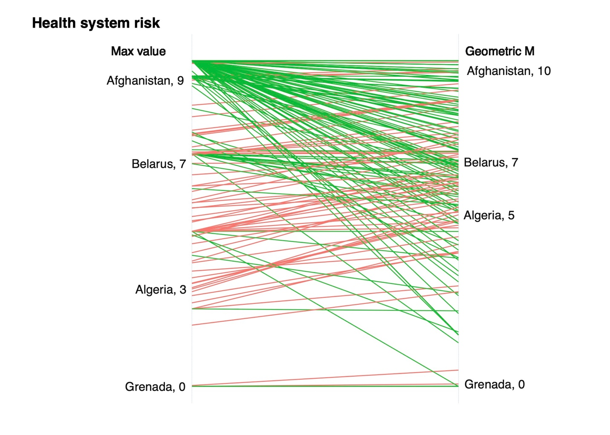
Note: Graphs compare country rankings for two different methods of calculating Health risk using a max value and geometric mean of underlying vulnerability and emerging threats. Labels for a subset of countries are included for illustrative purposes. Green lines indicate countries that have a reduction in score when moving from max to geometric approaches, while red lines showcase countries with increased scores.
Another important diagnostic is to consider the role of missing values. As mentioned previously, a large number of source indicators are geographically concentrated (whith decent coverage in some regions and none in others). To look at the influence of missing values on risk scores we devise an additional metric (termed a ‘Reliability Score’) that calculates the proportion of missing values used in constructing both emerging threats and underlying vulnerability scores. A reliability score of 1 implies that 100% of source indicators consist of missing values. The reliability scores will be made accessible in accompanying the main CRM outputs allowing users to gauge the quality of data inputs through the dashboard.
Figure 13 shows that reliability scores drop relatively sharply as the number of multi-dimensional risks increase. In other words, countries that are at higher risk of compounding threats tend to have greater availability of source indicators; lower risk of compounding threats have poorer data availability. The effect is far more pronounced in the Emerging threats score, with a negative trend witness across all five continents. This reflects that fact that risk monitoring databases are typically concentrated on coverage in high-risk areas (such as FEWS NET). While this presents a challenge for robust measurement of risk in lower-risk countries, it is at least reassuring that the trend does not run in the opposite direction (i.e poor coverage in riskier countries).
Figure 13: Count plot showing the relationship between reliability scores and overall alert flags per region
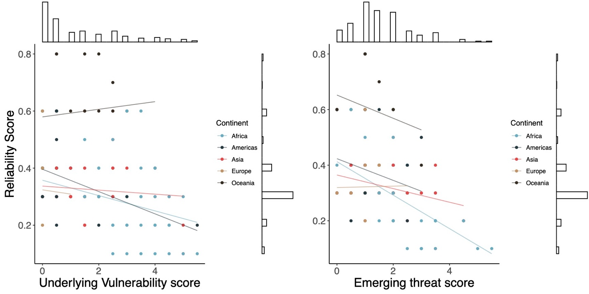
Note: Count plot shows the frequency of different risk combinations split according to five continents (each colored differently). The size of each dot corresponds to the number of countries assigned the respective score. Histograms for reliability and overall alert flag scores are shown on the outside.
Finally, we consider whether variation in scores across source indicators may result in skewed classification of high-risk threats. In doing so, we calculate the coefficient of variation for each country and each dimension of compound risk. This is done by dividing the standard deviation of all source indicators in a given dimension by the mean. Essentially, this tells us whether indicators are consistent when assigning risk dimension scores. A high score implies that the indicators are less likely to agree and/or point in the same general direction (a lower score shows greater consistency across source indicators).
Figure 14 reveals the distribution of country-level cofficients of variation across three emerging dimensions of compound risk24. In most cases, there doesn’t appear to be a strong trend – implying that variation amongst source indicators across the spectrum of risk scores is relatively consistent. If anything, trends are somewhat negative, suggesting that high risk scores have lower variation across source indicators. It is also important to note that considerable variation exists, particularly in relation to high-risk scores (i.e. 10).
Figure 14: Comparing country-level coefficients of variation across emerging compound risk dimension scores
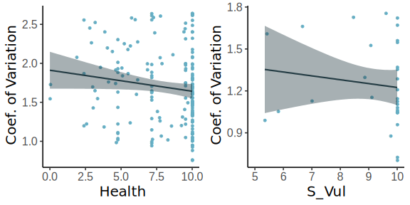
Plots show country-level coefficients of variation on the y-axis as the standard deviation of all source indicators divided by the mean. Results are presented for two dimensions of compound risk.
Figure 1: Annotated map of emerging compound risk with regional summaries (i.e. dynamic snapshot of changing risk conditions)
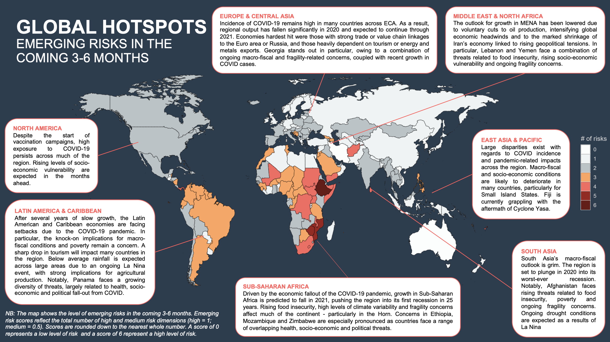
Note: The scale highlights countries with scores of 3 and above in order to emphasize higher risk countries and regions.
Figure 2: Distribution of change in scores between max value and geometric average methods
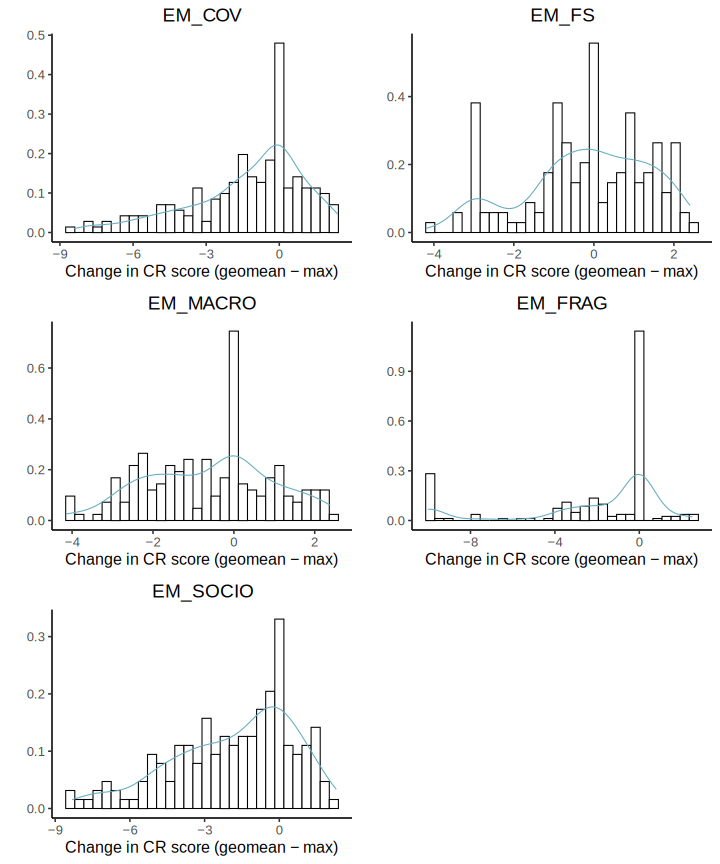
Notes: Figure show histograms of the difference between mean and geometric approaches (calculated as mean – geometric), showing how scores in the latter tend to lower than the former. Scores solely relate to emerging threats.
5.3.1.1 Annex Figure 3: Early Warning Heatmaps using an Arithmetic Mean to Calculate Overall Alert Flags
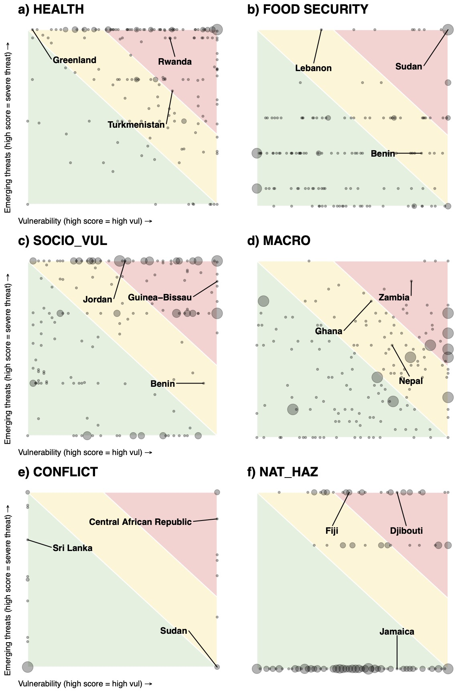
Heatmaps present information from three scores related to Underlying Vulnerability (X-axis), Emerging Threats (Y-Axis) and Overall Alert Level (shaded areas). Shaded areas relate to high-alert status (red), medium-alert status (yellow) and low-alert status (green). All shaded areas are derived according to a arithmetic mean.
5.3.1.2 Annex Figure 4: Early Warning Heatmaps Using a Quadrant System to Calculate Overall Alert Flags
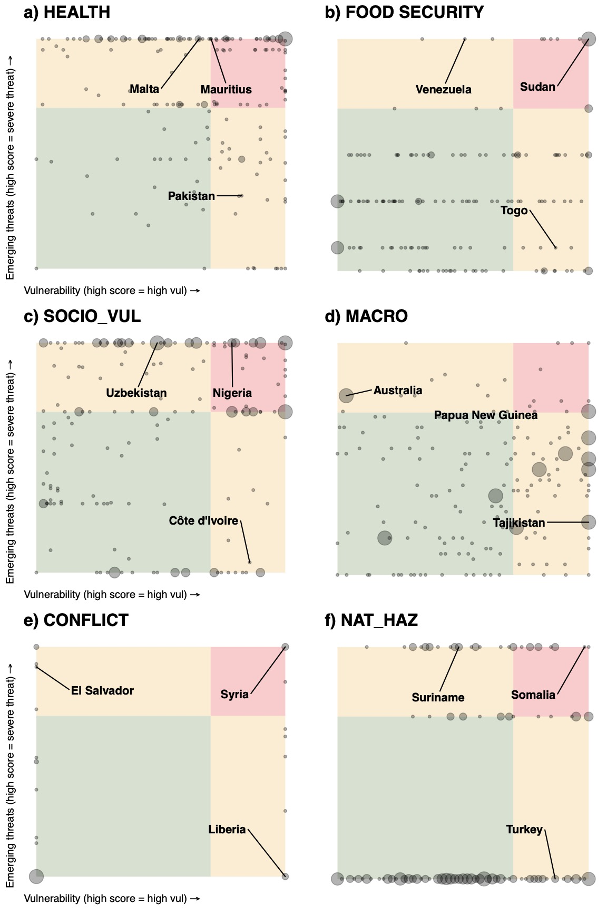
Heatmaps present information from three scores related to Underlying Vulnerability (X-axis), Emerging Threats (Y-Axis) and Overall Alert Level (shaded areas). Shaded areas relate to high-alert status (red), medium-alert status (yellow) and low-alert status (green).
5.3.1.3 Annex Figure 5: Early Warning Heatmap Showing Risk Profile For A Single Country
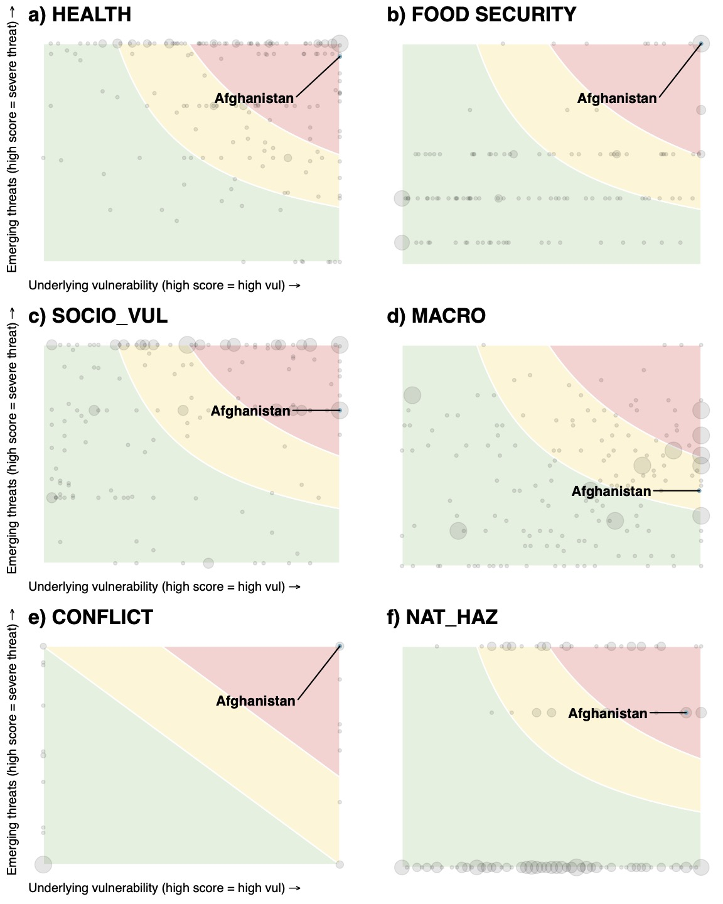
Heatmaps present information from three scores related to Underlying Vulnerability (X-axis), Emerging Threats (Y-Axis) and Overall Alert Level (shaded areas). Shaded areas relate to high-alert status (red), medium-alert status (yellow) and low-alert status (green).
Table 4: Emerging Compound Risk Scores (Top 28)
| HEALTH | FOOD | MACRO | S.VUL | NATURAL | CONFLICT | TOTAL | TOTAL(+MEDIUM) | RELIABILITY |
|---|---|---|---|---|---|---|---|---|
| SDN 10 | SDN 10 | SDN 10 | LBN 10 | ETH 10 | AFG 10 | ETH 5 | ETH 5.5 | PLW 0.8 |
| ETH 10 | AFG 10 | ETH 10 | BLR 10 | SOM 10 | MOZ 10 | SSD 4 | SOM 5 | FSM 0.8 |
| IRQ 10 | MOZ 10 | SSD 10 | IRN 10 | YEM 10 | NER 10 | SOM 4 | SSD 4.5 | NRU 0.8 |
| SSD 10 | NER 10 | CAF 10 | ESP 10 | GRD 10 | ETH 10 | SDN 3 | YEM 4.5 | TUV 0.8 |
| CAF 10 | ETH 10 | TCD 10 | ZMB 8.9 | KEN 10 | IRQ 10 | CAF 3 | UGA 4.5 | KIR 0.7 |
| TCD 10 | SSD 10 | HRV 10 | OMN 8.6 | ERI 10 | SSD 10 | TCD 3 | SDN 3.5 | GRD 0.6 |
| LBN 10 | CAF 10 | ZWE 10 | HRV 8.4 | SUR 10 | TCD 10 | LBN 3 | AFG 3.5 | ATG 0.6 |
| MRT 10 | LBN 10 | BRA 10 | RWA 8.4 | TTO 10 | ZWE 10 | ZWE 3 | CAF 3.5 | DMA 0.6 |
| BRA 10 | ZWE 10 | HTI 10 | BHR 8.2 | AGO 10 | HND 10 | YEM 3 | TCD 3.5 | LCA 0.6 |
| PER 10 | HTI 10 | PER 10 | GHA 7.7 | BHS 10 | SOM 10 | CMR 3 | LBN 3.5 | SLB 0.6 |
| SRB 10 | SOM 10 | SRB 10 | AUS 7.7 | BRN 10 | YEM 10 | COD 3 | CMR 3.5 | COM 0.6 |
| SOM 10 | YEM 10 | ARM 10 | PRT 7.7 | DJI 10 | CMR 10 | MLI 3 | COD 3.5 | PRK 0.6 |
| CMR 10 | CMR 10 | COL 10 | FIN 7.7 | FJI 10 | COD 10 | NGA 3 | MLI 3.5 | WSM 0.6 |
| COD 10 | COD 10 | KEN 10 | SVK 7.7 | GUY 10 | MLI 10 | BFA 3 | BFA 3.5 | TKM 0.6 |
| GIN 10 | MLI 10 | MWI 10 | SDN 7.5 | MYS 10 | BFA 10 | UGA 3 | LAO 3.5 | VUT 0.6 |
| MLI 10 | NGA 10 | NGA 10 | ETH 7.5 | PLW 10 | GEO 10 | BHS 3 | LKA 3.5 | KNA 0.6 |
| MNE 10 | BFA 10 | ROU 10 | LAO 7.5 | SLB 10 | MMR 10 | FJI 3 | NER 3 | VCT 0.6 |
| NGA 10 | SYR 10 | ZAF 10 | PNG 7.3 | KHM 10 | SYR 10 | SLE 3 | ZWE 3 | TON 0.6 |
| ALB 10 | VEN 10 | ZMB 10 | MNE 7 | KIR 10 | UGA 10 | LKA 3 | NGA 3 | GNB 0.6 |
| ATG 10 | SLE 10 | ARG 10 | UGA 7 | MDG 10 | AZE 10 | AFG 2 | MMR 3 | LIE 0.6 |
| BRB 10 | TCD 7 | BRB 10 | BIH 7 | FSM 10 | COG 10 | MOZ 2 | SYR 3 | MHL 0.6 |
| BFA 10 | MWI 7 | BOL 10 | LUX 7 | NRU 10 | GMB 10 | NER 2 | BHS 3 | BHS 0.5 |
| MUS 10 | ARG 7 | GEO 10 | SOM 7 | PAN 10 | CIV 10 | IRQ 2 | FJI 3 | GNQ 0.5 |
| MMR 10 | GTM 7 | MUS 10 | YEM 7 | SAU 10 | LAO 10 | BRA 2 | SLE 3 | KHM 0.5 |
| SYC 10 | SUR 7 | TUN 10 | GNQ 7 | TUV 10 | COL 9.3 | HTI 2 | MOZ 2.5 | STP 0.5 |
| ESP 10 | UGA 7 | UGA 10 | AZE 6.8 | VUT 10 | SLV 9.1 | PER 2 | BRA 2.5 | LBY 0.4 |
| TTO 10 | BRA 5 | BHS 10 | BTN 6.8 | CUB 10 | CAF 8.5 | SRB 2 | COL 2.5 | IRQ 0.4 |
| UGA 10 | COL 5 | BLZ 10 | MLT 6.8 | PHL 10 | LKA 7.3 | KEN 2 | GEO 2.5 | MDV 0.4 |
NOTES: Table presents the highest ranked countries for each respective dimensions. ‘Reliability’ relates to the proportion of missing values used in calculating emerging overall risk scores. All compound risk dimension scores are calculated using max value. ‘Total’ is the sum of all high risk dimensions (i.e. number of risk dimensions with a score of 10). ‘Total(+Medium)’ is the sum of high and medium risk dimensions (with high-risks assigned 1 and medium risk assigned 0.5)
Table 5: Underlying Vulnerability Scores (Top 28)
| HEALTH | FOOD | MACRO | SOCIO_VUL | NATURAL | CONFLICT | TOTAL | TOTAL(+MEDIUM) | RELIABILITY |
|---|---|---|---|---|---|---|---|---|
| AFG 10 | SDN 10 | LBY 10 | AFG 10 | HTI 10 | LBY 10 | CAF 5 | HTI 5.5 | FSM 0.3 |
| MOZ 10 | AFG 10 | SDN 10 | MOZ 10 | PER 10 | SDN 10 | HTI 5 | SOM 5.5 | GRD 0.2 |
| NER 10 | MOZ 10 | IRQ 10 | NER 10 | MMR 10 | AFG 10 | SOM 5 | AFG 5 | ATG 0.2 |
| SSD 10 | NER 10 | CAF 10 | SSD 10 | PAK 10 | MOZ 10 | YEM 5 | MOZ 5 | PLW 0.2 |
| CAF 10 | ETH 10 | ZWE 10 | CAF 10 | BGD 10 | NER 10 | AFG 4 | CAF 5 | LCA 0.2 |
| TCD 10 | SSD 10 | SOM 10 | TCD 10 | CHN 10 | IRQ 10 | MOZ 4 | YEM 5 | NRU 0.2 |
| HTI 10 | CAF 10 | YEM 10 | HTI 10 | IND 10 | SSD 10 | NER 4 | NER 4.5 | TUV 0.2 |
| SOM 10 | TCD 10 | COD 10 | SOM 10 | JPN 10 | CAF 10 | SSD 4 | TCD 4.5 | LIE 0.2 |
| YEM 10 | ZWE 10 | GIN 10 | YEM 10 | PHL 10 | TCD 10 | TCD 4 | COD 4.5 | MHL 0.2 |
| COD 10 | HTI 10 | IRN 10 | MWI 10 | IDN 10 | LBN 10 | COD 4 | SYR 4.5 | LBY 0 |
| GIN 10 | SOM 10 | TJK 10 | MLI 10 | VNM 10 | ZWE 10 | SYR 4 | BDI 4.5 | SDN 0 |
| ZMB 10 | YEM 10 | ERI 10 | SYR 10 | SOM 9.8 | HTI 10 | BDI 4 | SDN 4 | AFG 0 |
| BFA 10 | COD 10 | SYR 10 | BDI 10 | ECU 9.8 | SOM 10 | SDN 3 | SSD 4 | MOZ 0 |
| LSO 10 | KEN 10 | VEN 10 | GMB 10 | IRN 9.7 | YEM 10 | ZWE 3 | ZWE 4 | NER 0 |
| SYR 10 | MWI 10 | BDI 10 | LBR 10 | AFG 9.5 | CMR 10 | ERI 3 | PNG 4 | DZA 0 |
| UGA 10 | PNG 10 | PRK 10 | GNB 10 | COL 9.5 | COD 10 | LBR 3 | ERI 4 | ETH 0 |
| GNQ 10 | ERI 10 | TKM 10 | SLE 9.9 | PNG 9.5 | MLI 10 | GNB 3 | MMR 4 | IRQ 0 |
| BDI 10 | UGA 10 | AFG 9.9 | BFA 9.7 | GTM 9.5 | NGA 10 | LBY 2 | LBR 4 | SSD 0 |
| COM 10 | COG 10 | TCD 9.9 | COD 9.6 | MEX 9.5 | PNG 10 | IRQ 2 | MLI 3.5 | CAF 0 |
| GAB 10 | MDG 10 | UZB 9.7 | BEN 9.3 | DOM 9.5 | BFA 10 | GIN 2 | BFA 3.5 | TCD 0 |
| KIR 10 | BDI 9.9 | NGA 9.6 | LSO 9.1 | NIC 9.3 | ERI 10 | MWI 2 | COG 3.5 | HRV 0 |
| MDG 10 | AGO 9.8 | LBN 9.3 | ETH 9 | USA 9.3 | MMR 10 | MLI 2 | GMB 3.5 | LBN 0 |
| STP 10 | LBR 9.7 | LBR 9.2 | PNG 9 | HND 9.2 | SYR 10 | PNG 2 | MDG 3.5 | MDV 0 |
| SLE 10 | TZA 9.7 | COG 9.2 | ERI 9 | SLV 9.2 | TLS 10 | BFA 2 | GNB 3.5 | MRT 0 |
| LBR 10 | SLE 9.6 | GNQ 9.1 | UGA 9 | ALB 9 | VEN 10 | MMR 2 | IRQ 3 | UKR 0 |
| GNB 10 | KHM 9.3 | NER 9.1 | PRK 9 | PAN 8.7 | SLB 10 | UGA 2 | CMR 3 | ZWE 0 |
| KOR 10 | TLS 9.3 | DZA 9.1 | RWA 9 | TUR 8.7 | BDI 10 | VEN 2 | GIN 3 | BLR 0 |
| MHL 10 | NAM 9.3 | NIC 9.1 | SEN 9 | CHL 8.7 | COM 10 | COM 2 | MWI 3 | BRA 0 |
Note: Table presents the highest ranked countries for each respective dimension. ‘Reliability’ relates to the proportion of missing values used in calculating emerging overall risk scores. All compound risk dimension scores are calculated using max value. ‘Total’ is the sum of all high risk dimensions (i.e. number of risk dimensions with a score of 10). ‘Total(+Medium)’ is the sum of high and medium risk dimensions (with high-risks assigned 1 and medium risk assigned 0.5)
Table 6: Overall Alert Flags using a Geometric averaging method - i.e. combining underlying vulnerability and emerging threats
| HEALTH | FOOD | MACRO | S.VUL | NATURAL | CONFLICT | TOTAL |
|---|---|---|---|---|---|---|
| BDI 10 | AFG 10 | IRN 10 | CAF 10 | AGO 10 | AFG 10 | SOM 6 |
| BFA 10 | CAF 10 | LBN 9.7 | HTI 10 | BHS 10 | BFA 10 | YEM 6 |
| CAF 10 | COD 10 | BLR 9.4 | MWI 10 | BRN 10 | CMR 10 | AFG 5.5 |
| COD 10 | ETH 10 | SDN 8.7 | SSD 10 | CUB 10 | COD 10 | LAO 5.5 |
| GAB 10 | HTI 10 | ZMB 8.5 | TCD 10 | DJI 10 | COG 10 | MMR 5.5 |
| GIN 10 | MOZ 10 | SOM 8.4 | MLI 10 | ERI 10 | GMB 10 | CAF 5 |
| SLE 10 | NER 10 | YEM 8.4 | SLE 9.9 | ETH 10 | IRQ 10 | COD 5 |
| SOM 10 | SDN 10 | ETH 8.2 | LBR 9.6 | FJI 10 | LAO 10 | ETH 5 |
| SSD 10 | SOM 10 | GNQ 8 | ETH 9.5 | FSM 10 | MLI 10 | NGA 5 |
| STP 10 | SSD 10 | CAF 7.7 | SEN 9.5 | GRD 10 | MMR 10 | SSD 5 |
| TCD 10 | YEM 10 | COD 7.7 | UGA 9.5 | GUY 10 | MOZ 10 | UGA 5 |
| UGA 10 | ZWE 10 | LAO 7.7 | GNB 9.4 | KEN 10 | NER 10 | CMR 4.5 |
| KIR 10 | SLE 9.8 | COG 7.6 | STP 9.3 | KHM 10 | SOM 10 | MLI 4.5 |
| ETH 9.9 | BFA 9.4 | LBR 7.5 | ZMB 9.3 | KIR 10 | SSD 10 | SYR 4.5 |
| NGA 9.9 | NGA 9.2 | RWA 7.5 | MOZ 9.2 | LKA 10 | SYR 10 | TCD 4.5 |
| TGO 9.9 | MLI 9.1 | PNG 7.5 | LSO 9.2 | MDG 10 | TCD 10 | ZWE 4.5 |
| NER 9.8 | CMR 9 | UGA 7.4 | SDN 9.2 | MYS 10 | YEM 10 | BFA 4 |
| MRT 9.7 | MWI 8.4 | NGA 7.2 | NAM 8.9 | NAM 10 | ZWE 10 | COG 4 |
| SDN 9.7 | TCD 8.4 | MMR 7.2 | ZWE 8.9 | NRU 10 | CAF 9.2 | GMB 4 |
| AFG 9.7 | UGA 8.4 | VEN 7.1 | AGO 8.9 | PAN 10 | LBY 8 | HTI 4 |
| DJI 9.7 | SYR 7.9 | ZWE 7.1 | BFA 8.9 | PHL 10 | NGA 7.8 | KEN 4 |
| ERI 9.6 | VEN 7.1 | AZE 7 | MDG 8.9 | PLW 10 | LBN 7.2 | LBN 4 |
| COG 9.6 | KEN 7.1 | MLI 6.9 | KEN 8.9 | SAU 10 | HTI 5.3 | MDG 4 |
| CMR 9.6 | MDG 7.1 | BIH 6.9 | NGA 8.9 | SLB 10 | AGO 0 | MOZ 4 |
| MLI 9.6 | BDI 7 | DZA 6.9 | YEM 8.8 | SOM 10 | ALB 0 | NER 4 |
| BEN 9.5 | LBR 7 | NIC 6.9 | GHA 8.7 | SUR 10 | ARE 0 | SDN 4 |
| TZA 9.5 | GTM 6.7 | GHA 6.8 | COG 8.6 | THA 10 | ARG 0 | TZA 4 |
| FJI 9.4 | RWA 6.7 | BHR 6.8 | DJI 8.6 | TON 10 | ARM 0 | VEN 4 |
Note: Table presents the highest ranked countries for each respective dimension. Dimension of compound risk scores are calculated using a geometric mean (i.e. square root of emerging threats multiplied by underlying vulnerability). ‘Total’ is the sum of all high-risk dimensions (i.e. number of risk dimensions with a score of 7 or higher). ‘Total(+Medium)’ is the sum of high and medium risk dimensions (with high-risks assigned 1 and medium risk assigned 0.5)
Figure 6: Profile of total number of Overall Alert Flags in LAC region!
{kind=link}
Note: Level of compound risk devised as the sum of high and medium-risk dimensions (max score = 6). Medium-risks are assigned a score of 0.5, high-risks are assigned a 1. Scores are rounded down to the nearest integer.
Figure 7: Profile of total number of Overall Alert Flags in MENA region
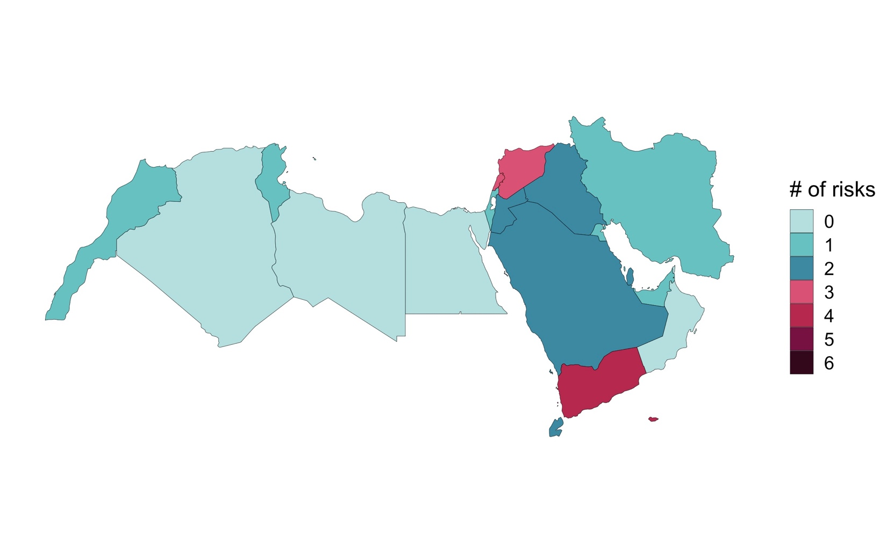
Note: Level of compound risk devised as the sum of high and medium-risk dimensions (max score = 6). Medium-risks are assigned a score of 0.5, high-risks are assigned a 1. Scores are rounded down to the nearest integer.
Figure 8: Profile of total number of Overall Alert Flags in SA region
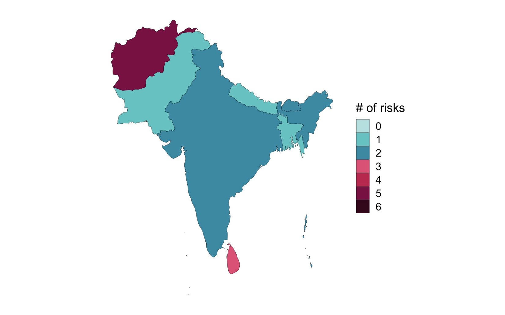
Note: Level of compound risk devised as the sum of high and medium-risk dimensions (max score = 6). Medium-risks are assigned a score of 0.5, high-risks are assigned a 1. Scores are rounded down to the nearest integer.
Figure 9: Profile of total number of Overall Alert Flags in SSA region
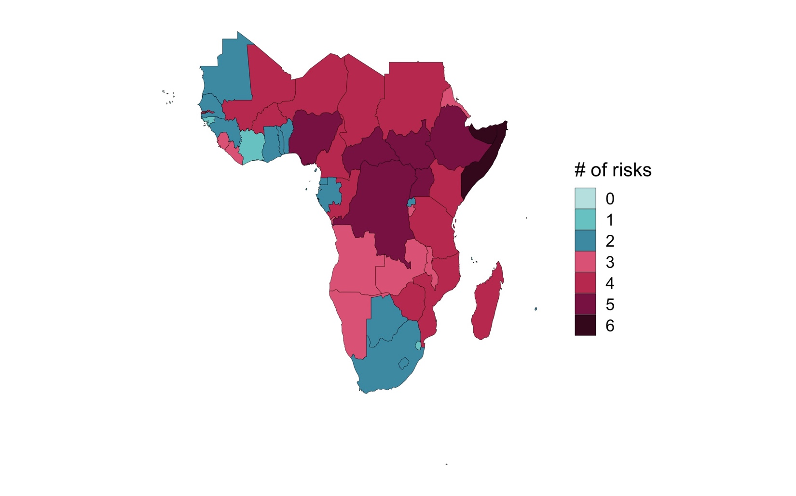
Note: Level of compound risk devised as the sum of high and medium-risk dimensions (max score = 6). Medium-risks are assigned a score of 0.5, high-risks are assigned a 1. Scores are rounded down to the nearest integer.
Figure 10: Screenshots from a prototype of the CRM’s interactive Dashboard
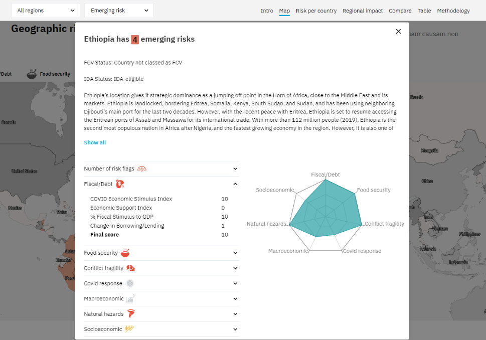
Screenshot of detailed country page included in the CRM Dashboard. Note that data is not up-to-date with the current version of the CRM.
Figure 11: Screenshots from a prototype of the CRM’s interactive Dashboard
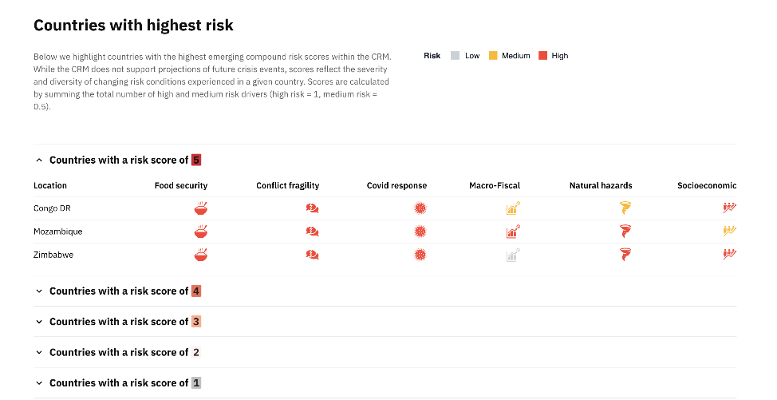
Note that data is not up-to-date with the current version of the CRM.
Figure 12: Screenshots from a prototype of the CRM’s interactive Dashboard
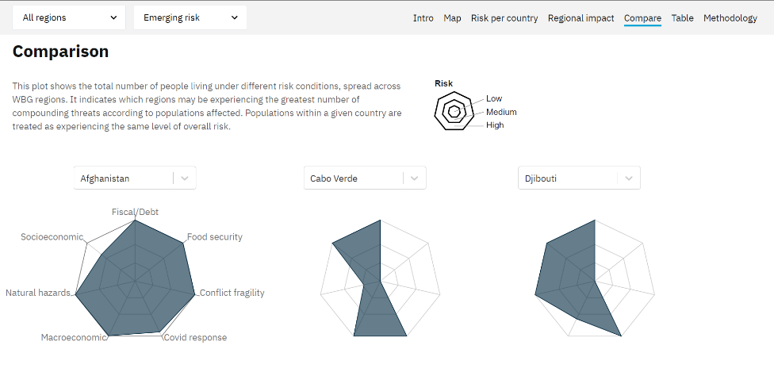
The above shows an interactive comparison of countries using radar charts. Users can select their countries of choice to allow like-for-like comparison. Note that data is not up-to-date with the current version of the CRM.
References
Caccavale, O. M., & Giuffrida, V. (2020). The Proteus composite index: Towards a better metric for global food security. World Development, 126, 104709
Cutter, S. L. (2018). Compound, cascading, or complex disasters: what's in a name?. Environment: science and policy for sustainable development, 60(6), 16–25.
Guillaumont, P. (2009). An economic vulnerability index: its design and use for international development policy. Oxford Development Studies, 37(3), 193–228.
IPCC (2012). Managing the risks of extreme events and disasters to advance climate change adaptation. A Special Report of Working Groups I and II of the Intergovernmental Panel on Climate Change, edited by: Field, CB, Barros, V., Stocker, TF, Qin, D., Dokken, DJ, Ebi, KL, Mastrandrea, MD, Mach, KJ, Plattner, G.-K., Allen, SK, Tignor, M., and Midgley, PM, Cambridge University Press, Cambridge, UK, and New York, NY, USA.
Oppenheim, B., Gallivan, M., Madhav, N. K., Brown, N., Serhiyenko, V., Wolfe, N. D., & Ayscue, P. (2019). Assessing global preparedness for the next pandemic: development and application of an epidemic preparedness index. BMJ global health, 4(1).
Pescaroli, G., & Alexander, D. (2018). Understanding compound, interconnected, interacting, and cascading risks: a holistic framework. Risk analysis, 38(11), 2245–2257.
The GCRP Board paper is available at: http://documents1.worldbank.org/curated/en/660951532987362050/pdf/GCRP-Board-Paper-26-June-FINAL-06272018.pdf↩︎
Together these partners are organised as a community of practice, seeking to promote knowledge sharing and advocacy in support of monitoring compound disaster risk within development and humanitarian organisations.↩︎
Zscheischler, J., Martius, O., Westra, S., Bevacqua, E., Raymond, C., Horton, R. M., ... & Maraun, D. (2020). A typology of compound weather and climate events. Nature reviews earth & environment, 1(7), 333–347.↩︎
The INFORM Risk Index identifies six ‘categories’ of risk, outlined as: natural hazards; human hazards; socio-economic vulnerability; vulnerable groups; institutional coping capacity; and infrastructural coping capacity. ND-GAIN similarly has six ‘sectors’ of vulnerability, including: food, water, health, ecosystem services, human habitat and infrastructure; and three ‘components’ of readiness, comprising: economic readiness; governance readiness; and social readiness. WFP’s early-warning of acute food insecurity is another relevant compound risk monitor, tracking changing risk conditions across eight ‘risk types’: tropical cyclones, locusts, dry conditions, floods, conflict/insecurity, political instability/unrest, displacement and economic crises.↩︎
Note that given current the current global risk landscape, an emphasis is placed on COVID-related impacts, particularly for the Health dimension. Over time, this will reorient towards a broader focus on ‘Pandemic response capacity’ as the impacts of COVID subside globally.↩︎
https://www.worldbank.org/en/topic/fragilityconflictviolence/brief/harmonized-list-of-fragile-situations↩︎
Note that household-level category is removed from the MFR heatmap, as it serves as an input to the socio-economic vulnerability dimension↩︎
Phone survey data is collected through the COVID-19 High-Frequency Monitoring Dashboard. Link to the publicly available database: https://www.worldbank.org/en/data/interactive/2020/11/11/covid-19-high-frequency-monitoring-dashboard↩︎
In the current context, these sources can be thought of as reflecting conditions prior to the COVID pandemic.↩︎
In the current context, the information presented here can be thought of as reflecting ongoing risk conditions during the COVID pandemic.↩︎
Given that overall risk scores are calculated using inputs from both underlying vulnerability and emerging threats, the procedure is somewhat different (see Annex Supplementary Text 1).↩︎
A number of the early warning metrics are binary in nature (i.e. whether a natural hazard has occurred or not). In such cases, indicators are simply assigned a 10 or 0 with no normalised values in between. See Annex Table 1–2 for further details↩︎
Aggregation differs for each dimension of compound risk based on the quality and coverage of underlying indicators. See the Annex for further details.↩︎
Note that high risk scores for underlying vulnerability and emerging threats are represented by a score of 10, while those for overall alert flags are represented by scores greater than 7 (owing to different aggregation methods). In cases where country-level scores are generated using the sum of both medium and high-risk dimensions, medium risks are assigned a half value (0.5) compared with a full value (1) for high-risks.↩︎
Aggregation of the conflict and fragility dimension is an exception. This is calculated using an arithmetic mean owing to the fact that Underlying Vulnerability scores are derived from a simple binary indicator (whether or not the country is included on the FCS list). Reasons for this are further elaborated in Section 3.2.↩︎
Dynamic refers to the fact that underlying indicators are updated in real time at higher frequency (weekly to monthly depending on the indicators)↩︎
Static refers to the fact that underlying indicators change slowly over time and are updated solely on a yearly basis↩︎
Figures are accurate as of 25th January 2021↩︎
Hence similar risk scores for Panama and Somalia should not be interpreted as both countries facing the same risk of compound crisis. Rather, than both are experiencing a similar worsening risk conditions relative to the norm.↩︎
underlying indicators are updated in real time at higher frequency (weekly to monthly depending on the indicators)↩︎
Accurate as of November 12th↩︎
Percentage point differences for both 2020 and 2021 are used in the current iteration, recognising that the knock-on implications of increased unemployment (and poverty) on household-level vulnerability can persist for long periods of time. Continued use of 2020–2019 figures will be actively considered in consultation with Poverty GP and the Development Data Group (and likely to drop in the later quarters of 2021). Thresholds in percentage point differences are different for the periods 2021–2020 and 2020–2019 owing to the differential impacts of the COVID crisis on socio-economic vulnerability. While large increases in unemployment (and poverty) are expected during the latter period, the former is characterised by lower growth rates as most countries are assumed to experience a relative rebound in conditions.↩︎
Ibid.↩︎
Note that Food Security, Natural Hazard and Socio-economic vulnerability are omitted owing to high dependence on binary source indicators.↩︎